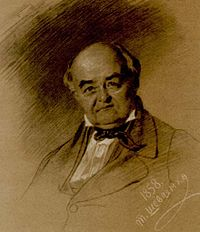

Тарас Шевченко
Тара́с Григо́рович Шевче́нко — український письменник,
класик української літератури, мислитель, художник.
Національний герой і символ України.
Братчик Кирило-Мефодіївського братства.
Академік Імператорської академії мистецтв.
Тара́с Григо́рович Шевче́нко — український письменник,
класик української літератури, мислитель, художник.
Національний герой і символ України.
Братчик Кирило-Мефодіївського братства.
Академік Імператорської академії мистецтв.
Тара́с Григо́рович Шевче́нко (відомий також як Кобза́р; 25 лютого (9 березня) 1814, с. Моринці, Київська губернія, Російська імперія (нині Звенигородський
район, Черкаська область, Україна) — 26 лютого (10 березня) 1861, Санкт-Петербург, Російська імперія) — український письменник, класик української
літератури, мислитель, художник. Національний герой і символ України.
Тарас Шевченко народився 25 лютого (9 березня) 1814 року: #1 в селі Моринці, нині Звенигородського району Черкаської області, Україна. Був третьою дитиною
селян-кріпаків Григорія Івановича Шевченка і Катерини Якимівни Бойко після сестри Катерини ( (20) листопада 1804 — близько 1848) та брата Микити (16 (28)
травня 1811 — близько 1870).
За родинними переказами, Тарасові діди й прадіди з батьківського боку походили від козака Андрія, який на початку XVIII століття прийшов із Запорізької Січі.
Батьки його матері, Катерини Якимівни Бойко, були переселенцями з Прикарпаття.
1816 року сім'я Шевченків переїхала до села Кирилівка Звенигородського повіту (нині Шевченкове Звенигородського району), звідки походив Григорій Іванович :
# 2. Дитячі роки Тараса пройшли в цьому селі. 12 (24) травня 1816 року народилася Тарасова сестра Ярина, 26 січня (7 лютого) 1819 року — сестра Марія а 8 (20) березня 1821 року народився Тарасів брат Йосип.
| Ім'я при народженні | Тарас cин Григорія Шевченка |
| Прізвисько | Кобзар і Пророк |
| Псевдо | Кобзарь Дармограй Перебендя |
| Народився | 25 лютого (9 березня) 1814 с. Моринці, Київська губернія, Російська імперія (нині Звенигородський район, Черкаська область, Україна) |
| Помер | 26 лютого (10 березня) 1861 (47 років) Санкт-Петербург, Російська імперія ·цироз печінки |
| Поховання | Чернеча гора |
| Підданство | Російська імперія |
| Національність | українець |
| Діяльність | поет, прозаїк, драматург, художник, гравер, громадський діяч |
| Alma maters | Петербурзька академія мистецтв (1844) |
| Мова творів | українська російська |
| Роки активності | 1826—1861 |
| Напрямок | романтизм, реалізм |
| Magnum opus | «Кобзар» |
| Конфесія | православ'я |
| Батько | Шевченко Григорій Іванович |
| Мати | Бойко Катерина Якимівна |
| Брати, сестри | Шевченко Йосип Григорович, Шевченко Микита Григорович, Бойко Ярина Григорівна і Красицька Катерина Григорівна |
| Автограф |
29 січня (10 лютого) 1823 року його старша сестра Катерина вийшла заміж за Антона Красицького — селянина із Зеленої Діброви, а 20 серпня (1 вересня) 1823 року від тяжкої праці й злиднів померла мати Катерина.
7 (19) жовтня 1823 року батько одружився вдруге з удовою Оксаною Терещенко, в якої вже було троє дітей. Вона жорстоко поводилася з нерідними дітьми, зокрема з малим Тарасом. 22 червня (4 липня) 1824 року народилася Тарасова сестра Марія — від другого батькового шлюбу.
Хлопець чумакував із батьком. Бував у Звенигородці, Умані, Єлисаветграді (тепер Кропивницький). 21 березня (2 квітня) 1825 року батько помер, і невдовзі мачуха повернулася зі своїми трьома дітьми до Моринців.
Тарас пішов у найми до дяка Петра Богорського. Як попихач носив воду, опалював школу, обслуговував дяка, читав псалтир над померлими і… вчився. Не стерпівши знущань Богорського й відчуваючи великий потяг до живопису, Тарас утік від дяка й почав шукати в навколишніх селах учителя-маляра. Кілька днів наймитував і «вчився» малярства в диякона Єфрема (Лисянка Звенигородського повіту, нині Черкаської області). Також мав учителів-малярів із села Стеблева, Канівського повіту та із села Тарасівки Звенигородського повіту. 1827 року він пас громадську отару в Кирилівці й там зустрічався з Оксаною Коваленко. Згодом подругу свого дитинства поет не раз згадає у своїх творах і присвятить їй поему «Мар'яна-черниця». Наймитуючи в кирилівського попа Григорія Кошиця, Тарас побував у Богуславі, у містечках Бурти й Шпола.
1828 року Шевченка взяли козачком (слугою) до панського двору у Вільшаній (Звенигородського повіту на Київщині), коли він звернувся за дозволом учитися в хлипнівського маляра. Того ж року помер Василь Енгельгардт і село Кирилівка стало власністю його сина — Павла Енгельгардта, який призначив Тараса своїм дворовим слугою у вільшанському маєтку.
Майже два з половиною роки — з осені 1828-го до початку 1831-го — Шевченко пробув зі своїм паном у Вільні. 6 (18) грудня 1829 року той застав Тараса вночі за малюванням козака Платова, героя війни 1812 року, нам'яв йому вуха й наказав відшмагати на стайні. Наступного дня наказ було виконано кучером Сидоркою. Подробиці Віленського життя маловідомі. Ймовірно, Тарас відвідував лекції з малювання професора Віленського університету Йонаса Рустемаса. Шевченко міг бути очевидцем Польського повстання 1830 року. З тих часів зберігся Тарасів малюнок «Жіноча голівка», який свідчить про майже професійне володіння олівцем.
Переїхавши 1831 року з Вільна до Петербурга, поміщик узяв із собою Шевченка, а щоб згодом мати зиск на художніх творах власного «покоєвого художника», віддав його в науку на чотири роки до живописця Ширяєва, у якого й замешкав Тарас до 1838 року. 1833 року він намалював портрет Павла Енгельгардта. Шевченко брав участь у розпису Великого театру як підмайстер-рисувальник.
Ночами, у вільний від роботи час, Шевченко ходив до Літнього саду, змальовував статуї. Улітку 1836 року під час одного з нічних рисувальних сеансів у Літньому саду він познайомився зі своїм земляком — художником Іваном Сошенком, а через нього — з Євгеном Гребінкою, Василем Григоровичем і Олексієм Венеціановим, які познайомили Тараса з упливовим при дворі поетом Василем Жуковським. Сошенко вмовив Ширяєва відпустити Шевченка на місяць, щоб той відвідував зали живопису Товариства заохочення художників. Комітет цього товариства, «розглянувши рисунки стороннього учня Шевченка», ухвалив «мати його на увазі на майбутнє».
Аполлон Мокрицький (1810-1870), художник, учень Брюллова і приятель Шевченка, що взяв на себе ініціативу залучити Брюллова для справи визволення Тараса від кріпацтва, зазначив у своєму «Щоденнику», що в середу 31 березня 1837 р. він показав Брюллову вірш Шевченка. Брюллов був ним «дуже задоволений і, побачивши в ньому думки,й почуття молодого чоловіка, вирішив витягти його з податного (кріпацького) стану» З цього бачимо, що в березні 1837 р. Шевченко вже писав вірші, яких не стидався показувати знайомим і знавцям. Шевченко почав вправлятися у віршуванні під враженням своєї зустрічі з українськими творами у Гребінки (липень 1836 р.).
Навесні 1838-го Карл Брюллов і Василь Жуковський вирішили викупити молодого поета з кріпацтва. Енгельгардт погодився відпустити кріпака за великі гроші — 2500 рублів. На той час ця сума була еквівалентною 45 кілограмам чистого срібла. Щоб здобути такі гроші, Карл Брюллов намалював портрет Василя Жуковського — вихователя спадкоємця престолу, і портрет розіграли в лотереї, у якій взяла участь імператорська родина. Лотерея відбулася 22 квітня (4 травня) 1838, а 25 квітня (7 травня) Шевченкові видали відпускну.
| Ілюстрація «Мені тринадцятий минало» Івана Їжакевича |
 |
| Тарас Шевченко. Хата батьків у с. Кирилівці. 1843. |
Після викупу Шевченко оселився на 4-й лінії Васильєвського острова в будинку № 100 і незабаром став студентом Петербурзької академії мистецтв й одним з улюблених учнів Брюллова. Будучи вже неабияким портретистом, Тарас опанував також мистецтво гравюри й виявив видатні здібності як графік та ілюстратор. Водночас він наполегливо поглиблював свої знання, читав твори класиків світової літератури, захоплювався історією та філософією.
Під враженням вістки про смерть автора «Енеїди» (29 жовтня 1838 р.) Шевченко написав вірш «На вічну пам'ять Котляревському». Разом із чотирма іншими його поезіями цей вірш побачив світ у альманасі Гребінки «Ластівка» (1841). 2 (14) листопада 1838 року Шевченко в Гатчині написав «Думку» (Тяжко, важко в світі жити…), яку вперше надрукували 1843 року в харківському альманасі Бецького «Молодик».
24 листопада (4 грудня) 1838 року переїхав на квартиру до Сошенка в будинок № 307 3-го кварталу Васильєвської частини (тепер — будинок № 47 на 4-й лінії). Наприкінці 1839 року Тарас Шевченко захворів на тиф. Одужував у майстерні Федора Пономарьова — свого найближчого приятеля в Академії мистецтв.
1840 року Тарас Шевченко видав першу поетичну книгу — «Кобзар», до якої увійшло 8 поезій: «Думи мої», «Перебендя», «Катерина», «Тополя», «Думка», «До Основ'яненка», «Іван Підкова», «Тарасова ніч». Книга справила велике враження на українську громаду. Частина російських критиків визнала непересічний талант поета. Інші — відгукнулись негативно, закидаючи автору безперспективність «мужицької мови».
| Карл Брюллов. Портрет
поета В. А. Жуковського. 1837—1838. Полотно, олія. Національний музей Т. Г. Шевченка, Київ. |
Окремими виданнями вийшли також поеми «Гайдамаки» (1841), «Гамалія» (1844), і «Тризна» (1844, російською мовою).
Улітку 1842-го, використавши сюжет поеми «Катерина», Шевченко намалював однойменну картину, яка стала одним із найвідоміших творів українського малярства.
13 (25) травня 1843 року Шевченко з Петербурга виїхав до України. Завітав до поета Віктора Забіли на його хуторі Кукуріківщина під Борзною. Зупинився у Качанівці на Чернігівщині, у маєтку поміщика Григорія Тарновського). У червні побував у Києві, де познайомився з Михайлом Максимовичем і Пантелеймоном Кулішем. На Полтавщині відвідав Євгена Гребінку в його Убіжищі. 29 червня (11 липня) 1843-го — у день св. Петра і Павла — відвідав разом із ним пишну гостину в хрещеної матері Гребінки, вдови-генеральші Тетяни Вільхівської в її «українському Версалі» в Мойсівці, де познайомився з поетом Олександром Афанасьєвим-Чужбинським та офіцером Яковом де Бальменом (пізніше присвятив йому поему «Кавказ»). У липні 1843 року в Ковалівці Шевченко відвідує Олексія Капніста — учасника руху декабристів, сина автора «Оди на рабство» і комедії «Ябеда» Василя Капніста. Обидва поїхали до Яготина, до Миколи Рєпніна-Волконського, щоб оглянути галерею картин і на замовлення Григорія Тарновського зробити копію з портрета Миколи Рєпніна. Там Шевченко познайомився з Варварою Рєпніною. Того літа він відвідував своїх нових знайомих: Закревських у Березовій Рудці, Якова де Бальмена в Линовиці, Петра Селецького в Малютинцях, Олександра Афанасьєва-Чужбинського в Ісківцях, Ревуцьких в Іржавці, Ґалаґанів у Сокиринцях та Дігтярях. 20 вересня (2 жовтня) 1843 року гостював у рідному селі Кирилівці, Звенигородського повіту, на Київщині в сестри та братів.
| Заява Тараса Шевченка до правління Академії мистецтвпро видачу квитка на право мешкання в Петербурзі. |
Протягом жовтня — грудня 1843 року жив у Яготині в Рєпніних, де на замовлення Олексія Капніста виконав дві копії з портрета Миколи Рєпніна (роботи швейцарського художника Й. Горнунга).
У Березані, у маєтку Платона Лукашевича, 9 жовт. 1843 р. Шевченко написав вірша «Розрита могила». Це найраніший твір, який увійде до рукописної книги поезій «Три літа» (1843–1850 рр). Безпосереднім поштовхом до написання вірша були археологічні розкопки курганів-могил, здійснювані в Україні археографічною комісією (чимало могил було поблизу Березані). Шевченко, як інші українські поети-романтики, вважав ці могили-кургани пам’ятками козацької доби. Отже, передовсім символом її героїчного минулого. В цей час найбільший спротив Шевченка до Богдана Хмельницького викликала поема Євгена Гребінки «Богдан», опублікована російською мовою 1843 р. (Окремі уривки з цієї поеми друкувались ще 1839 р.) В цій поемі Гребінка прославляє Богдана за те, що він у ніг царя московского склав свої гетманские клейноди і щастіє пряме вказав Україні из родів у роди. Оця похвальна тирада повинна була викликати в душі Шевченка таке обурення проти Богдана, яке не проходило до кінця Шевченкового життя. Після того Шевченко про Гребінку, доброго слова не промовив ніколи... і, можливо, припинив з ним приятелювання.
У лютому 1844 року виїхав з України до Петербурга через Москву, де пробув один тиждень і зустрівся з Михайлом Щепкіним та Осипом Бодянським. Під час першої подорожі до України Шевченко задумав видати серію офортів «Живописна Україна». 30 жовтня (11 листопада) 1844 року комітет Товариства заохочення художників ухвалив надати Шевченкові грошову допомогу (300 рублів) для цього видання. 123 Перші 6 офортів («У Києві», «Видубецький монастир у Києві», «Судна рада», «Старости», «Казка» («Солдат і Смерть»), «Дари в Чигирині 1649 року») вийшли у листопаді.
1844 р. опубліковано передрук першого видання «Кобзаря» з додатком поеми «Гайдамаки» під назвою «Чигиринський Кобзар і Гайдамаки». Того ж року Шевченко написав історіософсько-політичну комедію «Сон» — поему-гротеск, яка розкриває перед читачами наслідки уярмлення України Москвою.
| Петербурзька академія мистецтв, де у 1838-45 роках навчався Шевченко |
22 березня (3 квітня) 1845 року Тарас Шевченко подав заяву до Ради Академії мистецтв із проханням дати йому звання художника. Рада ухвалила рішення про надання йому звання некласного художника, яке треба було затвердити на загальних зборах Академії. Загальні збори Академії 18 листопада 1845 р. затвердили Тараса Шевченка в академічному званні неласний художник у малярстві історичному і портретному
23 березня (4 квітня) рада Академії мистецтв видала Шевченкові за його заявою квиток на право проїзду в Україну і назад для художніх занять, а також безперешкодного там перебування.
| К. П. Брюллов, наставник Шевченка в Академії мистецтв |
31 березня (12 квітня) 1845 року Шевченко виїхав із Петербурга через Москву до Києва. У Москві зустрівся з Михайлом Щепкіним і оглянув Кремль. На шляху до Києва Шевченко проїхав Подольськ, Тулу, Орел, Кроми, Есмань, Кукуріківщину.
Весну, літо й осінь 1845 року Шевченко провів у Мар'їнському на Полтавщині (Миргородський повіт) на запрошення маршалка шляхти Миргородського повіту Олександра Лук'яновича. Жив у окремому від панів приміщенні, малював портрети й краєвиди. Тут поет здружився з селянами, охоче з ними зустрічався. До нашого часу зберігся лише портрет О. А. Лук'яновича (у Миргородсьому краєзнавчому музеї. У вересні він гостював у своїх родичів у Кирилівці, відвідав сестру Катерину в Зеленій Діброві, побував у Княжому.
Ставши співробітником Київської археографічної комісії, Шевченко багато подорожував Україною, збирав фольклорні й етнографічні матеріали та змальовував історичні й архітектурні пам'ятки.
Восени та взимку 1845 року Шевченко написав такі твори: «Єретик», «Сліпий», «Великий льох», «Наймичка», «Кавказ», «І мертвим, і живим…», «Холодний Яр», «Давидові псалми». Тяжко захворівши, наприкінці 1845-го написав вірш Як умру… Через яскраво антиімперський характер більшість нових поетичних творів не могли бути надруковані, але вони розповсюджувались у списках.
Навесні 1846 року Шевченко прибув до Києва й оселився в будинку (тепер — Літературно-меморіальний будинок-музей Тараса Шевченка) в колишньому провулку «Козине болото». В той час написано балади «Лілея» та «Русалка». У квітні Тарас пристав до Кирило-Мефодіївського братства — таємного товариства, заснованоного з ініціативи Миколи Костомарова.
| Три літа. Рукописна книга Тараса Шевченка. 1845 |
27 листопада (9 грудня) 1846 року Шевченко подав заяву на ім'я попечителя Київського навчального округу про зарахування на посаду вчителя малювання в Київському університеті Святого Володимира, на яку його затвердили
21 лютого (5 березня) 1847-го. Однак працювати вчителем не довелося. У березні того року після доносу почалися арешти Кирило-Мефодіївців.
5 (17) квітня 1847 Шевченка заарештували на дніпровській переправі, відібрали папери, зокрема книгу «Три літа» й під конвоєм відправили до Петербурга. На допитах в казематі Третього відділу імператорської канцелярії (тепер вул. Пестеля, 9) поет не виказав нікого з членів товариства. Перебуваючи близько двох місяців за ґратами, Шевченко написав вірші, які згодом об'єднав у цикл «В казематі». Шевченка звинуватили в написанні віршів, з якими могли посіятись і згодом укоренитися думки про вигадане блаженство часів Гетьманщини, про щастя повернути ці часи й про можливість Україні існувати як окремій державі Участі поета в Кирило-Мефодіївському товаристві слідство не довело. Шевченка як наділеного міцною будовою тіла призначили рядовим в Оренбурзький окремий корпус із забороною писати й малювати.
| Тарас Шевченко. Автопортрет на березі Сирдар'ї. Раїм, червень 1848 |
Зауважимо, що Т. Шевченко був середнього зросту. У «Формулярному списку 1-го лінійного батальйону за 1854 рік вказано: Від народження 39 років. зростом 2 аршини і 5 вершків (164,46 см).
В Орській фортеці, усупереч нелюдській забороні (Трибунал під головуванням самого Сатани не міг би проголосити такого холодного нелюдського присуду), Шевченко потай малював і писав вірші. 1847 року він написав поеми «Княжна», «Варнак», «Іржавець», «Чернець», «Москалева криниця», завершив цикл поезій «В казематі», заново переписав поему «Осика» (згодом — «Відьма»), балади «Русалка» й «Лілея» (з «Другого Кобзаря», запланованого перед арештом).
Восени 1847 року в Орській фортеці Шевченко зенедужав спершу ревматизмом, а згодом ще й на люту цингу, про що написав у листах до Андрія Лизогуба (11 грудня) та Михайла Лазаревського (20 грудня):
| «Новопетровське укріплення з моря» (1853-57) |
З весни 1848 року Шевченко брав участь в Аральській експедиції під командуванням лейтенанта Олексія Бутакова.
Перебування на острові Косарал стало дуже продуктивним у творчості митця. Окрім виконання численних малюнків, сепій та акварелей, Шевченко написав поеми «Царі», «Титарівна», «Марина», «Сотник» і понад 70 поезій, у яких відбито емоційний стан поета.
 А ти, друже мій єдиний,
Як маєш журитись,
Прочитай оцю цидулу
І знай, що на світі
Тілько й тяжко, що в пустині
А ти, друже мій єдиний,
Як маєш журитись,
Прочитай оцю цидулу
І знай, що на світі
Тілько й тяжко, що в пустиніЗа чотири роки (1847–1850) йому вдалося створити й зберегти чотири рукописні книжечки без назв, відзначених на титульних сторінках роками: 1847, 1848, 1849, 1850.
І четвертий рік минаєПісля повернення з Аральської описової експедиції, в Оренбурзі, Шевченко зблизився з учасниками польського повстання 1830—1831 рр., і заприязнився з польськими письменниками Броніславом Залеським та Едвардом Желіговським, з якими пізніше листувався.
| «У шинку» (1856-57) |
У квітні 1850 року Шевченка заарештували й після піврічного ув'язнення на гауптвахті відправили до Новопетровського укріплення (нині місто Форт-Шевченко) на півострові Мангишлак. Там він карався сім років. Умови укріплення були жахливими: місцева вода була солонувата, харчі здебільшого сухі та теж солоні — через це солдати страждали на цингу, від якої дуже страждав і Шевченко. Цинга була спільним лихом усіх степових укріплень, особливо взимку. Щороку від хвороб, породжених тяжкими побутовими умовами, виснажливої муштри, фортифікаційних робіт, нещасних випадків (переважно під час учбових стрільб) — гинули солдати. Так, у 1852 році в укріпленні з різних причин померло одинадцять солдатів, а двох було вбито під час стрільб. Будні укріплення для Шевченка були огидними — своїм безглуздям, одноманітністю, пияцтвом та аморальною поведінкою деяких офіцерів. Зрідка, щоправда, виникала потреба послати загін на боротьбу з войовничими бандами хівинців, які грабували мирні казахські аули. За словами Шевченка — «найбідніший, найжалюгідніший прошарок у нашій православній відчизні. У нього відібране все, чим тільке життя красне: сімейство, родина, свобода, одним словом, все». Через важку долю солдати знаходили хвилинну розраду в горілці. Шевченко не відокремлював себе від солдат, жив просто, декого з них потайки навчав грамоти. Бачачи в поетові культурну людину, цінуючи його людяність і товариськість, солдати оберігали його від негативного впливу солдатського побуту. Шевченко був одним з небагатьох солдатів, які провели в укріпленні найбільш тривалий час — сім років без перерви.
| «Кара шпіцрутенами» (1856- 57) |
Не пощастило Шевченкові й з безпосередніми начальниками: ротний командир, штабс-капітан М. М. Потапов, був людиною настільки «жорстокою й бездушною», що його ненавиділи солдати й не любили офіцери. Потапов дуже ретельно взявся виконувати наказ Обручова: окрім закріплення за Шевченком спостерігача «особливого дядька з солдат», його стали водити на «фортові роботи, на муштру». Також Потапов присікувався до Шевченка з дріб'язковими причіпками: то вивертав йому кишені, шукаючи олівця чи клаптя паперу, то знущався над ним за не досить голосну відповідь чи за те, що той дивився при цьому вниз. Особливо дошкуляв ротний командир рядовому Шевченкові муштрою (так званим тихим учбовим кроком, маршировкою, рушничними прийомами), тим, що було найбільш ненависним для поета та за його формулюванням: мало на меті «перетворити мислячу людину на автомат з рушницею». Щоденна виснажлива муштра доводила Шевченка мало не до відчаю. Таким же обмеженим був і помічник Потапова — підпоручик П. І. Обрядін, людина не тільки «брутальна і жорстока, але й безчесна».
Проте знайшлися серед офіцерів і доброзичливі, зокрема, лікар С. Р. Нікольський, сотники А. Хаїров і Ф. Ю. Чаганов, прапорщик В. О. Михайлов, підпоручик В. П. Воронцов, підпоручик О. Є. Фролов, поручик К. Зелінський. Окрім Зелінського, дружні стосунки з Шевченком мали й інші польські політичні засланці — унтер-офіцери М. Мостовський, Ф. Фіялковський і Ф. Куліх; рядові І. Плащевський і С. Пшевлоцький, який у 1857 році передав Шевченкові з Уральська книгу «Естетика» К. Лібельта. Очевидно, саме згадані офіцери — значною мірою сприяли зближенню коменданта укріплення А. П. Маєвського й солдата Шевченка. Людина розумна й гуманна, підполковник Маєвський користувався серед підлеглих пошаною і приязню, через заборону поету листуватися, комендант навіть згодився одержувати й відсилати листи Шевченка. Окрім цього комендант запросив Шевченка вчити двох своїх невеликих синів, саджав його за один стіл зі своїми гостями-офіцерами, — за що наражався на небезпеку доносу. Прихильність і підтримка коменданта багато значили для безправного солдата: це була єдина нагода у вільні від муштри години побути в атмосфері доброзичливості, і, що дуже важливо, — з'явилася можливість писати листи друзям. Друзі з «волі» час від часу надсилали Шевченкові гроші, розуміючи, що солдатові ніде взяти кошти на так необхідні книжки та різні дрібні витрати. Про період перебування Шевченка перших років в укріпленні відомо лише в найзагальніших рисах: муштра, брутальність безпосередніх начальників (Потапова, Обрядіна); світлі години в домі Маєвського; дружнє спілкування з Воронцовим та солдатами Скобелєвим та Обеременком.
Нелегкі перші роки перебування Шевченка в укріпленні стали роками певної стабілізації, коли нікому невідомий політичний засланець виявив себе різнобічно талановитою, незвичайно глибокою внутрішньо людиною, гідною пошани й приязні, з якою, ставилися до нього комендант та деякі офіцери. Це й помітив хорунжий Уральського війська М. Ф. Савичев (пізніше — етнограф, історик, літератор, художник), який зустрівся з поетом у 1852 році і став його другом.
| Землянка Шевченка у місті Форт-Шевченко (раніше Новопетровське) |
| «Портрет А. О. Ускової з донькою Наташею» (1854) |
Приблизно, з осені 1852 року, знайшовши коло форту добру глину й алебастр, Шевченко почав вправи в скульптурі, тому що на це не було заборони. Серед виконаних ним скульптурних творів були й два барельєфи на новозавітні теми: «Христос у терновому вінку» та «Іоанн Хреститель». Незважаючи на заборону писати і малювати — Шевченку все ж вдалося займатися образотворчою діяльністю. За роки перебування на Мангишлаку Шевченко виконав понад сто сімдесят малюнків сепією, аквареллю, олівцем — переважно на мангишлацьку тематику. Також він намалював і чимало портретів, що, окрім прагнення творити, ще й було єдиним джерелом заробітку. Збереглося їх небагато, менше, ніж було виконано. Однак Шевченко суворо оберігає таємницю занять малюванням. Деякі малюнки, які він передає в Оренбург Залеському для продажу, не підписані, хоча покупці «вимагають штемпеля». 1852 рік був для Шевченка надзвичайно плідним. Деяке полегшення в побуті, можливість мати тихий куток та трохи вільного часу для праці у будинку коменданта Маєвського — все це сприяло творчим роздумам, цього часу він розпочинає працю над прозовими повістями російською мовою з українською тематикою й багатим автобіографічним матеріалом («Наймичка», «Варнак», «Княгиня», «Музыкант», «Художник», «Несчастный», «Близнецы» та інші). Було кілька причин написання повістей російською мовою, це і заборона писати поетичні твори, і взагалі небезпека писати рідною мовою, навіть листи.
У 1851 році Шевченку пощастило на ціле літо покинути «ненависне» укріплення — він вирушив у складі експедиції на розвідку родовищ кам'яного вугілля в гори Каратау, отримавши свободу від ненависної муштри і обридлих стін форту. Серед її учасників опинилися й друзі Шевченка — геолог Л. Турно і Бр. Залеський, завдяки клопотанням якого поета було включено до експедиції, хоча комендант Маєвський знову дуже ризикував, даючи дозвіл на це. Каратауська експедиція стала часом натхненної творчої праці Шевченка — він виконав близько ста малюнків аквареллю й олівцем (зокрема, «Вигляд на гори Актау з долини Агаспеяр», «Гора в долині Агаспеяр», «Гори в долині Агаспеяр», «Кладовище Агаспеяр»). Під час експедиції Залеський, Турно і Шевченко жили в однім наметі, точніше — в казахській кибитці. Буденна сцена їх щоденної праці та побуту зображена Шевченком на малюнку, відомому під умовною назвою «Т. Г. Шевченко серед товаришів».
| «Казарма» (1856-57) |
Після смерті Маєвського, у 1853 році новим комендантом став майор І. О. Усков, який до цього був ад'ютантом командира Окремого Оренбурзького корпусу В. О. Перовського (змінив Обручова у 1851 році). За словами дружини Ускова, Агати Омелянівни, коли її чоловік зайшов до Перовського попрощатися перед від'їздом до укріплення, той просив Ускова якось полегшити становище Шевченка, що й дало йому сміливість в майбутньому діяти у цьому напрямі. Перовський був ознайомлений зі справою Шевченка ще до приїзду в Оренбург. Л. М. Жемчужников стверджував, що Перовський дізнався про Шевченка від К. П. Брюллова та В. А. Жуковського і що його просили за поета брати Лизогуби й їхній родич граф Гудович. Перовський зі свого боку звернувся у лютому 1850 року до Л. В. Дубельта із запитанням, чи можна якось полегшити долю Шевченка. Дубельт доповів про це шефу жандармів О. Орлову, який відповів, що Шевченко заслуговував ще більш тяжчого покарання і тільки завдяки монаршій милості його віддали у солдати, тому рано просити царя про помилування. Відтоді Перовський відмовляв усім прохачам за Шевченка; але існує версія, що він міг подбати щодо невеликого неофіційного полегшення поетові, тим більше що з Усковим він був відвертим. Прибувши до укріплення, Усков не відразу наблизив до себе Шевченка, йому було потрібно розібратися в людях та якось убезпечитися від можливих доносів. Шевченку, через сувору зовнішність, Усков спочатку здавався деспотом. Після прибуття до укріплення дружини Ускова з трирічним сином Дмитром — відбулося зближення Шевченка з цією родиною, який до того ж завжди любив малих дітей. Агата Ускова, яку ще в Оренбурзі Шевченкові друзі просили помогти засланому поетові, всіляко намагалася зблизити його зі своїм чоловіком. Вона постійно запрошувала Шевченка до столу, наполегливо переконувала його, що під зовнішньою суворістю її чоловіка ховається добра й чула людина. Помалу Шевченко почав бувати у домі коменданта й став другом сім'ї. Діти Ускових дуже любили Шевченка. У 1853 році, коли в Ускових трапилося горе — помер їх маленький син Митя — Шевченко спроектував для його могили пам'ятник і сам наглядав за його спорудженням (пам'ятник зберігся донині). Однак Усков, як раніше і Маєвський, не зважувався дозволити Шевченкові жити поза казармою, коли наступали осінні холоди, поет був змушений не тільки ночувати, але й працювати в казармі — серед «смороду й зику».
| «Портрет І. О. Ускова» (1853-57) |
Новий комендант доклав чимало зусиль, щоб упорядкувати територію форту і його околиць, Шевченко з запалом допомагав йому садити дерева в закладеному ще Маєвським саду біля укріплення. Пізніше за наказом Ускова в саду було збудовано літній будиночок для його родини, альтанку, землянку для коменданта і поставлено «джуламійку» для Шевченка; тут він міг спокійно малювати або писати. Своє малярське приладдя поет зберігав у землянці Ускова. На початку 1854 року Усков, як свого часу і Маєвський, зробив спробу домогтися для Шевченка дозволу у Перовського намалювати запрестольний образ «заради прикрашення храму» в укріпленні — на що отримав відмову.
Восени 1854 року генерал-майор Г. А. Фрейман, який інспектував укріплення та перейнявся до Шевченка повагою і співчуттям, а наступного року й Усков та капітан Косарев — клопоталися перед Перовським щодо підвищення його в чин унтер-офіцера — це б звільнило поета від казарми та муштри й дало б надію звільнення з солдатської неволі в майбутньому. Але ці клопотання були відхилені, можливо, з обережності Перовського, окрім цього, була ще одна прикрість — на надіслане І. Усковим кураторові Київського учбового округу прохання повернути атестат Шевченка на звання вільного художника канцелярія куратора відповіла зневажливою відмовою — що тяжко пригнітило Шевченка, але ненадовго. У квітні 1855 року він поновив спроби домогтися полегшення своєї долі: написав листи секретарю Академії мистецтв В. І. Григоровичу та віце-президенту Академії Ф. П. Толстому, прохаючи останнього поклопотатися за нього перед президентом Академії, сестрою царя, великою княгинею Марією Миколаївною. Лист Шевченка до Толстого з благанням про допомогу глибоко зворушив усю родину, особливо близько до серця прийняв долю поета приятель цієї сім'ї художник М. Й. Осипов. Лист Шевченка не залишив байдужою і дружину Толстого, Анастасію Іванівну, яка теж взяла участь у його визволенні та почала з ним листуватися.
Коли 18 лютого 1855 року помер Микола I — 19 лютого було оголошено маніфест нового царя, Олександра II, щодо звільнення політзасланців у зв'язку зі вступом на престол. Але Шевченко ще протягом мучився відсутністю звістки, чи вплинуть маніфести царя на його долю, чи ні, і тільки 14 квітня 1856 року він дізнався, що для нього нічого не змінилося: «Я близький був до відчаю, так мене приголомшила ця безнадійна звістка».
| «Кара колодкою» (1856) |
Навесні 1856 року для Шевченка прийшла сумна звістка, що його друзі Залеський та Сераковський, з якими він листувався, назавжди залишають Оренбург. У квітні 1856 року Шевченко почав шукати всіх можливих шляхів до полегшення своєї долі, намагаючись залучити до цього всіх знайомих йому впливових осіб. Він просить Залеського звернутися до О. І. Бутакова, а також до генерала К. І. Бюрно, щоб вони обстали за нього перед Перовським, про це ж прохає і В. М. Рєпніну. Друг Шевченка Залеський до цього вже кілька разів просив за нього Перовського, але безуспішно. Завдяки Залеському та О. М. Плещеєву долею Шевченка зацікавилися, окрім Бюрно, ще й такий впливовий військовий адміністратор, як Л. П. Екельн. Також до визволення Шевченка долучився академік К. М. Бер, який тричі прибував з експедицією в укріплення, він клопотав перед Дубельтом, який люто ненавидів поета-бунтівника і робив усе, щоб затримати його звільнення. У травні 1856 року Шевченко одержав лист від М. М. Лазаревського, який повідомляв, що про поета клопочуться, окрім Ф. П. Толстого, «добрі люди», і не без успіху. Влітку того ж року президент Академії мистецтв Марія Миколаївна особисто зверталася до начальника III відділу В. А. Долгорукова щодо визволення Шевченка. Клопотання друзів поета перед Перовським досягли мети — до військового міністерства ним було надіслано список кандидатів на амністію. З приводу Шевченка він пропонував: «Рядового Тараса Шевченка звільнити від служби». 25 січня 1857 року III відділ, враховуючи клопотання віце-президента та президента Академії мистецтв, повідомив свою пропозицію військовому міністру, схвалюючи звільнення Шевченка, але справа ще тяглася по інстанціях кілька місяців. У підсумку на звільнення Шевченка була дана згода, якби не клопотання друзів — заслання Шевченка могло би стати довічним. 28 травня 1857 року Перовський наказав звільнити зі служби усіх амністованих з тим, щоб вони оселилися в Оренбурзі аж до кінцевого їх звільнення на батьківщину. Таким чином царське «помилування» перетворилося на нове покарання — заслання на поселення в Оренбург під суворий нагляд поліції.
Коли надійшла звістка про близьке звільнення, капітан Косарев дозволив Шевченкові у вільні від муштри й караулу години перебувати поза казармою. Поет увесь свій вільний час проводив то на городі, в саду, пишучи й малюючи, то на березі моря, або гуляв навколо укріплення. Намагаючись якось скоротити довгі тижні очікування офіційного звільнення, у червні Шевченко почав вести щоденник, записуючи туди все, що вважав вартим уваги.
| «Сад біля Новопетровського укріплення» (1854) |
21 липня 1857 року в укріплення нарешті надійшов наказ про звільнення зі служби Шевченка, після якого йому ще треба було подолати 1000 кілометрів до штабу в Уральську, для отримання наказу по батальйону. Поет радів звільненню, не знаючи того, що йому, згідно цього наказу, належало жити під суворим наглядом поліції в Оренбурзі невизначений строк. Після довгих вагань через довгу відсутність наказу по батальйону щодо його звільнення, 1 серпня комендант Усков, враховуючи велику відстань до Уральська та не знаючи його умов — зважився видати квиток на проїзд Шевченка до Петербурга. Наступного дня, увечері, розпрощавшися нашвидку з усіма, Шевченко відплив рибальським човном до Астрахані. Згодом, видача Шевченку квитка загрожувала Ускову покаранням, яке могло б звести нанівець усе, чого він досяг багаторічною нелегкою службою. Після отримання 23 серпня батальйонного наказу, Усков відразу ж надіслав повідомлення в поліцейські відділення Астрахані, Нижнього Новгорода, Москви, Петербурга, а також в Академію мистецтв, прохаючи зупинити Шевченка й повернути його в Оренбург. Шукаючи захисту, Усков звернувся з листом до академіка К. Бера, де прохав поклопотатися перед новим начальником корпусу генерал-ад'ютантом О. Катеніним. На щастя для Ускова, а можливо й завдяки зусиллям впливових людей у Петербурзі й Оренбурзі йому вдалося уникнути покарання.
| Автопортрет Шевченка на момент повернення з заслання (1857) |
5 серпня, після триденної подорожі морем і рукавами волзької дельти, Шевченко прибув до Астрахані. Скінчилося дуже тяжке для поета й художника десятиліття, сповнене образ, принижень, муштри, дальніх походів з небезпечними ситуаціями (як це видно з щоденника начальника Аральської експедиції). Він постарів, посивів, втратив здоров'я. З Астрахані Шевченко планував пароплавом дістатися Волгою до Нижнього Новгорода, але відразу ж з'ясувалося, що доведеться чекати два тижні, доки прийде й навантажиться рейсовий пароплав компанії «Меркурій». Перші дні Шевченко віддав пошукам тимчасового житла й оглядові міста. Спочатку воно видалося йому дуже непривітним. Місто дуже не сподобалося Шевченку, у свому щоденнику він назвав його «сірою купою сміття»: брудні трактири, жодного готелю, нема де купити харчів на майбутню тривалу подорож. На щастя, у місті цього часу перебував у справах товариш Шевченка по службі з Новопетровського укріплення плац-ад'ютант Л. О. Бурцев, який і дав йому притулок. Між першими невідкладними справами були листи, які Шевченко надіслав друзям, оповіщаючи їх про визволення. Невдовзі довелося шукати нове житло, Бурцев мав одружуватися. Після тривалих пошуків Тарас Григорович знайшов комірчину біля каналу — темну й незатишну. Виявилося, що у тому ж будинку, де було пристановище — мешкав Г. Ф. Муравський, колишній студент Київського університету, який познайомившись із Шевченком, розповів про нього своєму колезі С. А. Незабитовському, колишньому киянинові, а також учителеві в Астраханській гімназії І. П. Клопотовському та випускникові того ж університету Томашу Зброжеку. Астраханські «кияни» захоплено привітали звільненого поета. Того ж дня увечері від Зброжека про його перебування в місті дізнався астраханський рибопромисловець-мільйонер О. О. Сапожников, якого ще хлопчиком Тарас Григорович вчив малюванню, наступного ранку він запросив поета до себе, запропонував йому кімнату в своєму будинку й каюту на пароплаві «Князь Пожарський». Таким чином, в Астрахані поет опинився у колі прогресивної флотської інтелігенції.
| Портрет П. А. Овсянникова (1857) |
22 серпня Шевченко пароплавом по Волзі відбув з Астрахані до Нижнього Новгорода. Подорож Волгою тривала майже місяць. На пароплаві Шевченко жив у каюті капітана В. В. Кишкіна, його старого знайомого, в якого була «завітна портфель» із списками творів російської позацензурної поезії, завдяки цьому під час плавання відбувалися літературні ранки і вечори. Виїжджаючи з Астрахані, Шевченко сподівався багато малювати волзькі береги; але це виявилося майже неможливим: обриси швидко змінювалися, дуже заважало здригання палуби від роботи двигуна. Малювати вдавалося лише під час зупинок і частково тоді, коли пароплав повільно долав річкові перекати. Збереглися начерки Камишина, Саратова, «Царіва кургана», Казані й інших місць. Він виконав і декілька портретів — К. Козаченко, тещі Сапожникова й інших. Протягом подорожі, Шевченко не проминув нагоди оглянути приволзькі міста, свої враження від побаченого він регулярно записував у щоденнику. У Саратові він відвідав мати М. І. Костомарова — Тетяну Петрівну. Самару він назвав «казенно-безлицею» найбільшою хлібною пристанню на Волзі, позбавленою елементарних ознак міської культури, на що вплинуло, за його словами, царювання Миколи I, якого він називав «неудобозабываемым Тормозом». Відвідати Симбірськ і поглянути на монумент М. М. Карамзіну перешкодили шквал з мокрим снігом та непролазна багнюка. Казань сподобалася Шевченкові, нагадавши йому Москву. Він побував в Казанському університеті, шукаючи слідів перебування там товаришів по Кирило-Мефодіївському товариству, але безуспішно. Маленькі Чебоксари, де церков виявилося не менше, ніж будинків, дали йому грунт для такого висновку: «Головний вузол московської старої внутрішньої політики — православ'я. „Неудобозабываемый Тормоз“ через дурість свою хотів затягнути цей знесилений вузол і перетягнув. Він тепер на одному волоску тримається».
20 вересня пароплав прибув до Нижнього Новгорода, тут на Шевченка чекала прикра несподіванка: М. О. Брилкін, головний управитель нижегородської контори пароплавної компанії «Меркурій», розповів йому, що поліцмейстер міста наказав відразу ж повідомити про його прибуття. Поліцмейстер офіційно заявив Тарасу Григоровичу, що він ще не остаточно звільнений з військової служби й повинен повернутися в Оренбург і там очікувати свого остаточного звільнення. Поет був майже у відчаї, в'їзд до Москви й Петербурга йому було заборонено, у Нижньому Новгороді йому довелося затриматися майже на пів року. Допомогли Шевченку нові знайомі — М. О. Брилкін та П. А. Овсянников — помічник управителя компанії «Меркурій», який надав йому притулок. Вони порадили йому прикинутися хворим, щоб уникнути повернення до Оренбурга.
| «Архангельський собор у Нижньому Новгороді» (1857) |
23 жовтня 1857 року Шевченко зробив запис у щоденнику: При світлі величавої пожежі в девятій годині ввечері зустрівся я з К. О. Шрейдерсом (чиновник для особливих доручень при нижньогородському генерал-губернаторі). Він повідомив мене, що прийшов урядовий папір про мене від командира оренбурзького окремого корпусу на імя тутешнього військового ґубернатора… Папір повідомляє про те, що мені забороняється вїзд до обох столиць і що я — під секретним наглядом поліції. Гарна свобода! Собака на припоні! Це значить: нема за що дякувати, В(аша) В(еличність)!
Хоча Нижній Новгород став для Шевченка наче новим місцем заслання: поет жив під наглядом поліції, особисті неприємності, розчарування, наклепи ворогів гнітили його — він з інтересом поринув у культурно-громадське життя міста, задовольняв свої творчо-літературні та театральні інтереси й невгамовну жадобу до читання і творіння. Він написав поеми «Неофіти» (завершено 8 грудня 1857 року), «Юродивий» (твір не закінчено; датується орієнтовно: грудень 1857 року), триптих «Доля», «Муза», «Слава» (9 лютого 1858 року), закінчив повість «Прогулка с удовольствием и не без морали» (16 лютого 1858 року), створив двадцять портретів і зробив чимало архітектурних малюнків. Кожен його день був наповнений цікавими зустрічами. Завдяки знайомству з впливовими у місті Брилкіним та Овсянниковим Тарас Григорович познайомився з багатьма місцевими діячами, котрі становили тут культурну еліту. Серед них були й люди, які завжди глибоко захоплювали поета, — митці, літератори, а були й просто офіційні знайомства: їх доводилося заводити в пошуках замовників на портрети — єдиний на той час спосіб існування для художника Шевченка, так як він не хотів обтяжувати своїх не дуже заможних друзів М. М. Лазаревського та Бр. Залеського. Малювання портретів не змогло дати значних доходів, Шевченко й далі перебував у досить скрутних матеріальних умовах. Нижегородська громадськість, особливо демократичні кола міста, поставилася до поета доброзичливо, «Шевченка буквально носили на руках», — відзначав біограф М. К. Чалий, описуючи його перебування у цьому місті. 24 грудня 1857 року Шевченка відвідав його давній друг актор М. С. Щепкін. Радість Шевченка була безмежна, Щепкін пробув в гостях шість днів, протягом яких уславлений артист виступав у Нижегородському театрі. Побачення з Щепкіним було, безумовно, не лише однією з найвизначніших подій у духовному житті поета, але й для всього міста. Буваючи в в місцевих театральних колах, Шевченко познайомився з юною акторкою Катериною Піуновою, він вчив її художній декламації, намагався прищепити любов до творів Пушкіна, Гоголя, Салтикова-Щедріна, підбирав сцени для виступу, щоб поправити її матеріальне становище — поет хотів влаштувати акторку в Харківський драматичний театр. Шевченко закохався в Піунову, хотів одружитися на ній, але акторка не відповіла йому взаємністю. Наприкінці лютого 1858 року Шевченко, нарешті, отримав звістку від Лазаревського, що графу Толстому вдалося виклопотати для нього дозвіл повернутися до Петербурга, який йому був вручений 5 березня. 8 березня Шевченко виїхав з Нижнього Новгорода до Москви.
|  |
| Портрет М. С. Щепкіна (1858) |
У Москві Шевченко оселився у Щепкіна, сім'я знаменитого актора щиро зустріла його. Окрім Щепкіна, у Москві було багато й інших культурних діячів, які високо цінували творчість українського поета та дорожили дружбою з ним, але Шевченко, незважаючи на шанобливе ставлення до них, відвідати їх на перших порах не міг. У дорозі він занедужав: ймовірно, до застути приєдналося загострення цинги, якою тяжко хворів на засланні. Тіло вкрилося болячками й розпухло око. Того ж дня (11 березня) Шевченка оглянули лікарі Д. Ван-Путерен і Д. Мін, які прописали хворому потрібні ліки, дієту і заборонили протягом тижня виходити на вулицю. Приїзд до Петербурга, якого так прагнув поет, знову затримувався. Звістка про приїзд Шевченка швидко поширилася в колах московської інтелігенції, поета поспішали провідати друзі й знайомі, серед яких були М. О. Максимович. Визначні представники літератури, науки прагнули познайомитися з ним. Незважаючи на недугу, поет продовжив редагувати й переробляти свої вірші, написані в роки заслання. Коли через кілька днів по приїзді в Москву здоров'я Шевченка поліпшилося він відвідав княжну Варвару Репніну. Ця зустріч справила на Шевченка сумне враження, вона здавалася йому відчуженою, зникла колишня щирість і безпосередність; містичні настрої, які все більше опановували Репніною, були йому чужими й дивними. Москва приваблювала Шевченка як центр науки, культури, з яким у нього було пов'язано чимало спогадів. Одужавши після хвороби, незважаючи на відлигу й багнюку, він цілими днями пішки ходив по місту, милуючись його красою та старовинними пам'ятками. Окрім зустрічі зі своїми давніми знайомими, зокрема, професором О. Бодянським, родиною Станкевичів, А. Мокрицьким, Шевченко познайомився з такими представниками місцевої інтелігентної еліти, як Бабст, Чичерін, Кетчер, Кронеберг, Афанасьєв, Корш, Крузе й іншими. Знаменною подією для Шевченка в Москві стала зустріч і особисте знайомство з видатним російським письменником С. Аксаковим, який у листах так приязно поставився до нього. 26 березня Шевченко на поїзді вирушив до Петербургу.
Відразу ж по приїзді до Петербурга Шевченко завітав до свого друга М. Лазаревського, який жив тоді на Мойці, в будинку графа Уварова, і спочатку оселився у нього. Родина Лазаревських дуже тепло поставилася до поета, тут він знайшов щирих, доброзичливих друзів. Шевченко констатував у щоденнику: «На подив симпатичні люди ці прекрасні брати Лазаревські, і всі шість братів, як один, чудова рідкість». Шевченко вернулся до Петербурга фізично знесіленій й хворий. В. Ковальов розповідав: «При цій зустрічі я був вражений різкою зміною його зовнішності: це не був колишній широкоплечий, кремезний, з цілим волоссям на голові, чоловік у сірому сюртуку, яким я його знав раніше; переді мною був зовсім схудлий, лисий чоловік, без кровинки в обличчі; руки його проглядали до того, що видно було наскрізь кістки і жили... Я мало не заплакав».
| Портрет М. М. Лазаревського (1858) |
28 березня, поет разом з Лазаревським відвідав родину Толстих. Це була винятково сердечна зустріч, яку Шевченко описав у своэму щоденнику словами: «Сердечніше і радісніше не зустрічав мене ніхто і я нікого, як зустрілися ми з моєю святою заступницею і з графом Федором Петровичем. Ця зустріч була задушевніше всякої спорідненої зустрічі». Архівні матеріали показують, що Шевченкові дозволено було повернутися до Петербурга з певним застереженням: він лишався особою «піднаглядовою», у ряді документів підкреслювалося, що імператор дозволив проживання у столиці і відвідування Академії мистецтв з умовою, щоб за ним вівся належний нагляд. У перші ж дні перебування в Петербурзі поет повинен був з'явитися до поліції, він відвідав правителя канцелярії обер-поліцмейстера І. Таволгу-Мокрицького, свого старого знайомого, який порадив йому поголити бороду, щоб не справити неприємного враження на його патрона графа Шувалова, до якого він повинен був з'явитися як до свого головного наглядача. Тарас Григорович зважив на пораду і поголився, адже солдатам, навіть у відставці, заборонялося носити бороду, а Шевченко перед поліцією був тільки «рядовим у відставці». Але перед цим він сфотографувався (у фотографії Деньєра) в шапці й кожусі, з бородою. 6 квітня Шевченко одягнув фрак і зустрівся з Шуваловим, який прийняв його просто, неформенно, і без повчань, — чим справив на поета вигідне для себе враження. 15 квітня Шевченко представився шефу жандармів В. Долгорукову, який дав йому «ввічливу настанову», після якої поет отримав «прописку» в столиці. Так, «прописанний» Шевченко, відразу ж потрапив під найпильніший нагляд поліції, йому було заборонено відлучатися будь-куди з Петербурга. Незважаючи на гнітючу атмосферу жандармського і поліцейського нагляду, на «пильне око» III відділу, поет з перших же днів перебування в Петербурзі був оточений ласкою і дружбою передових людей.
Не бажаючи обтяжувати родину Лазаревських в плані житла, Шевченко попросив графа Толстого, щоб той надав йому квартиру в Академії. Одержавши квартиру в Академії, Тарас Григорович відразу ж взявся за наполегливу працю як художник, насамперед у галузі офорта. Особливо інтенсивно Шевченко працював як гравер. У травні 1858 року в Ермітажі Шевченко познайомився з гравером Іорданом, який погодився йому допомагати в освоюванні цієї професії. З середини травня Шевченко почав працювати в Ермітажі, у липні в нього вже був готовий перший зразок роботи на цьому терені — офорт із ескіза Б.Є. Мурільйо. Влітку Шевченко залишився в Петербурзі й продовжував роботу над офортами. Використовуючи кожну нагоду, разом з С. Гулаком-Артемовським Тарас Григорович відвідував театри і концерти. Сучасники одностайно відзначали пристрасть Шевченка до музики та співу, через що він зустрічався композиторами Даргомижським, Глінкою, М. Мусоргським, Балакірєвим, А. Контським, захоплювався співом І. Грінберг. Поет відвідує вистави драматичного театру, особливо під час гастролей М. Щепкіна. Приїзд видатного артиста з Москви до Петербурга був для нього великою радістю.
23 січня 1859 року до Петербурга приїхала Марко Вовчок, і вже наступного дня Шевченко познайомився з нею. Між ними встановилася глибока й щира дружба. Згодом Шевченко присвятив письменниці написану 13 липня 1858 року поезію «Сон». Вперше вона з'явилася в журналі «Русская беседа» (№ 3 за 1859 рік) і відразу набула великої популярності, поширювалася в численних списках. 17 лютого 1859 року поет написав вірш «Марку Вовчку. На пам'ять 24 генваря 1859», в якому зворушливо називав письменницю своєю «донею», однодумицею, спільницею і продовжувачкою своєї справи. В особі Марка Вовчка він бачив передусім «кроткого пророка і обличителя жестоких людей неситих». Марко Вовчок присвятила йому свою повість «Інститутка».
На початку 1859 року разом з Марком Вовчком до Шевченка завітав І. Тургенєв, щоб особисто познайомитися з поетом. Хоча суспільно-політичні погляди Тургенєва і Шевченка значно розходилися, проте у них були доброзичливі і дружні відносини. Тургенєв добре ставився до української прогресивної культури в цілому, за словами П. Анненкова, він співчував прагненням Шевченка, які мали на меті підняти мову своєї країни, розвинути її культуру, скасувати нерівноправні відносини до російської культури. Самого Шевченка Тургенєв характеризував «пристрасною, неприборканою, не зламаною долею, чудовою особистістю». Російські консервативні літературні кола недоброзичливо ставилися до «українських симпатій» Тургенєва, зокрема до його знайомства з Шевченком.
Незабаром по приїзді до Петербурга Шевченко зустрівся і особисто познайомився з М. Г. Чернишевським, в особі якого він бачив послідовного революційного мислителя і діяча, який твердо знав, куди йти. Чернишевський вів наполегливу й послідовну боротьбу проти царату й кріпосництва — що не могло не викликати щирого захоплення і співчуття Шевченка. У свою чергу, Чернишевський високо цінив Шевченка як справжнього народного співця, який всією своєю діяльністю розхитував самодержавно-поміщицький лад.
Все тяжче переносячи самотність, у листі від листопада 1858 року, Шевченко звертався до М. В. Максимович з проханням «одружити його», боючись що він «так і пропаде бурлакою на чужині». У наступних листах до Максимович, Шевченко сподівався знайти собі «вірну дружину», відвідавши наступного літа Україну. Незважаючи на тяжкі обставини, Шевченко наполегливо працював як художник, зокрема в галузі гравюри. Він удосконалював гравірувальну техніку; багато часу приділяв офорту, застосовуючи нові методи цього мистецтва. Шевченко майже цілодобово перебував у майстерні, добиваючись значних успіхів у цих типах мистецтва.
У листопаді 1858 року в Петербурзі почалися гастролі всесвітньовідомого актора негра Айри Олдріджа. Шевченко регулярно відвідував вистави, щиро захоплюючись грою актора. Шевченко з ним познайомився і на ознаку високої пошани й дружби до актора написав його портрет.
16 квітня 1859 року Шевченко подав до Ради Академії мистецтв прохання присвоїти йому звання академіка, надавши їй гравюри: одну створену з картини Рембранта, що зображає притчу про виноградаря, а іншу — з картини Соколова «Приятелі». Академія мистецтв високо оцінила талант Шевченка-гравера і цього ж дня винесла попередню постанову про призначення його в академіки і задала програму на звання академіка з гравірування на міді.
| Хата на Пріорці |
Навесні 1858-го поет прибув до Петербурга, де його зустріли українські друзі та численні прихильники, серед них і родина Федора Толстого. В червні того ж року Шевченко оселився в Академії мистецтв, де жив до самої смерті. Щоб познайомитися з українським поетом, туди приїжджали Іван Тургенєв і Марко Вовчок.
Діставши з чималими труднощами дозвіл, Шевченко влітку 1859 року повернувся в Україну, де не був дванадцять років. Тут відвідав своїх рідних — у Кирилівці та декого з давніх знайомих. У перших числах серпня 1859-го Шевченко приїхав до Києва й оселився на межі Куренівки та Пріорки, на Вишгородській вулиці. Його мрії одружитися та придбати землю над Дніпром не здійснилися: Шевченка втретє заарештували і після кількаразових допитів (зокрема Марком Андрієвським — чиновником для особливих доручень при київському генерал-губернаторі) зобов'язали повернутися до Петербурга.
На світанку 14 серпня 1859 року поет диліжансом через Ланцюговий міст, що на Дніпрі, виїхав до Петербурга.
До останніх днів свого життя поет перебував під таємним наглядом поліції. Одначе він створив багато нових творів. Уважають, що поема «Марія» становить вершину творчості поета після заслання. Шість раніше написаних і заборонених у Росії поезій Шевченка видано за кордоном у Лейпцигу 1859-го. У друкарні Пантелеймона Куліша 1860 року вийшло друком нове видання «Кобзаря», яке, однак, охоплювало тільки незначну частину Шевченкових поезій. Того ж року надруковано й «Кобзар» у перекладі російських поетів, а в січні 1861-го випущено окремою книжкою Шевченків «Буквар» (Букварь южнорусскій) — посібник для навчання в недільних школах України, виданий коштом автора та накладом 10 000 примірників.
| Тарас Шевченко. Світлина 1860 р. |
У Петербурзі Шевченко вирішив зайнятися гравюрою, бо цей вид мистецтва можна було тиражувати. У квітні 1859 року Шевченко, подаючи деякі зі своїх гравюр на розгляд ради Імператорської академії мистецтв, просив удостоїти його звання академіка чи задати програму на здобуття цього звання. 16 квітня рада постановила визнати його «призначеним в академіки й задати програму на звання академіка з гравірування на міді». 2 вересня 1860 року разом з іншими митцями Тараса Шевченка визнано академіком гравюри «на повагу майстерності та пізнань у мистецтвах».
Уже хворим Шевченко взяв участь у підготовці першого числа часопису «Основа», яке вийшло ще за його життя. Перед смертю записав олівцем на офорті автопортрета 1860 року свій останній вірш «Чи не покинуть нам, небого». Український літературознавець Павло Зайцев назвав цей твір незрівнянним поетичним документом боротьби безсмертної душі з тлінним тілом перед обличчям фізичної смерті.
В останні роки Шевченко хворів на ревматизм та набуті внаслідок цього ваду серця, поліартрит і цироз печінки — перебіг цих хвороб, із часом, ускладнила водянка. З осені 1860 року самопочуття Тараса Григоровича почало погіршуватися. 23 листопада, зустрівшись у Михайла Лазаревського з доктором Едуардом Барі, Шевченко особливо скаржився на біль у грудях. Доктор, вислухавши груди, радив Шевченкові поберегтися. Відтоді здоров'я його погіршувалося зо дня на день. Січень і лютий Шевченко просидів майже безвихідно в кімнаті, зрідка тільки відвідуючи деяких знайомих.
6 лютого (10 березня) 1861 року Шевченко помер від наростаючої водянки (Hydrops). На кошти друзів 1 (13 березня) його було поховано спочатку на Смоленському православному кладовищі в Петербурзі.
| Посмертна маска |
| Могила на Смоленському цвинтарі Санкт-Петербурга |
Після того, як п'ятдесят вісім днів прах Шевченка перебував у Петербурзі, його домовину, згідно із заповітом, за клопотанням Михайла Лазаревського, після отримання ним дозволу у квітні того ж року, перевезено в Україну й перепоховано на Чернечій горі біля Канева.
| Селяни копають могилу Тарасу Шевченку на Чернечій горі біля Канева. 1861 |
26 квітня (8 травня) 1861 року домовину викопали, перенесли через увесь Петербург до Московського (Миколаївського) вокзалу й залізницею перевезли до Москви.
Далі шлях проходив через Серпухов, Тулу, Орел, Кроми, Дмитровськ, Севськ, Глухів, Кролевець, Батурин, Ніжин, Носівку, Бобровицю, Бровари до Києва. Випрігши коней із воза, студенти Університету Святого Володимира провезли труну Ланцюговим мостом і далі набережною до церкви Різдва Христового на Подолі.
У Києві з Тарасом прощалися студенти, поети, багато киян. Була навіть думка, яку підтримували й родичі поета, поховати його в Києві. Та Григорій Честахівський обстоював думку про поховання в Каневі, бо Шевченко ще за життя мріяв про «тихе пристанище і спокій коло Канева».
8 (20 травня) 1861 року на пароплаві «Кременчук» останки Кобзаря перевезено з Києва до Канева. Дві доби домовина перебувала в Успенському соборі, а 10 (22 травня), після відслуженої в церкві панахиди, прах віднесли на Чернечу гору.
Туди ж перенесли дерев'яний хрест і встановили на могилі.
Першим коханням молодого Шевченка була Оксана, його ровесниця. Родичі та знайомі закоханих були впевнені, що молоді одружаться, щойно досягнуть відповідного віку. Але надії були марними — Тарас у валці свого пана Павла Енгельгардта мусив поїхати до Вільно. Розлука була несподіваною й довгою. Усе своє життя Шевченко згадував ту дівчину, яку колись кохав.
Наступною дівчиною, яку він кохав, була віленська швачка Дзюня Гусіковська.
1843 року Шевченко поїхав в Україну й зустрів там Варвару Рєпніну, якій присвятив поему «Тризна», Ганну Закревську, якій згодом присвятив вірш «Г. З.». В родині князя Миколи Рєпніна виховувались її зведені сестри Глафіра, Олександра і Тетяна Псьол. Глафіра вчилась в Полтавському інституті шляхетних дівчат, отримала хорошу освіту. Живопису навчалася вдома. Намалювала портрет Шевченка, який не зберігся.
Наступними жінками, котрі мали місце в серці поета, були Агата Ускова, дружина коменданта Новопетровського Укріплення Іраклія Ускова, та 16-річна актриса Катерина Піунова, майже на тридцять років молодша від нього. Останнім коханням поета була 19-річна петербурзька наймичка Ликера Полусмакова , якій Шевченко присвятив вірші «Ликері», «Л. Поставлю хату і кімнату…»
Тарас Шевченко у своїй творчості відобразив саме ті думки й настрої, які були важливими в житті українців його часу. Про те, що його творчість знайшла відгук у серцях людей, свідчить те, що в другій половині XIX — на початку XX століття чи не єдиною книжкою в більшості сільських хат України був «Кобзар», вірші з нього вчили напам'ять, за ним училися читати.
В історичному розвитку України Шевченко — явище незвичайне своїм місцем у літературі, мистецтві, культурі. Походженням, становищем та відомістю Шевченко — виняткове явище також у світовій літературі. З 47 років життя поет пробув 24 роки в кріпацтві, 10 — на засланні, а решту — під наглядом жандармів. Шлях Шевченка до творчих висот визначив в образній формі І. Франко:
Багатогранна творчість Шевченка була і залишається одним із головних чинників формування національно-політичної свідомості українців. З новою силою відчутний тепер її вплив на різні сторони духовного життя української нації.
Шевченко був і глибоким ліриком, і творцем епічних поем, і видатним драматургом та різнобічно обдарованим митцем. Його літературна спадщина обіймає велику збірку поетичних творів («Кобзар»), драму «Назар Стодоля» і два уривки з інших п'єс; дев'ять повістей, щоденник та автобіографію, написані російською мовою, записки історично-археологічного характеру («Археологічні нотатки»), чотири статті та понад 250 листів.
| Марія. Ілюстрація до поеми О. С. Пушкіна «Полтава». 1840 |
Упродовж першого періоду літературної діяльності (1837−1843) написав багато високохудожніх поетичних творів, у яких — поряд із версифікаційними й стилістичними засобами народно-пісенної поетики — було й чимало нових, оригінальних рис, що ними поет значно розширив і збагатив виражальні можливості українського вірша (складна й гнучка ритміка, уживання неточних, асонансних і внутрішніх рим, використання цезури й перенесення (анжамбеман), майстерність алітерацій, звукової інструментації та поетичної інтонації, астрофічна будова вірша тощо). Новаторство прикметне й для Шевченкових епітетів, порівнянь, метафор, символів та уособлень. Керуючись власним художнім чуттям і не оглядаючись на панівні тоді літературні канони, Шевченко знаходив відповідну поетичну форму для втілення нових тем та ідей, які підказувала йому тогочасна дійсність. Одним словом, Тарас Шевченко спочатку наслідував найкращі зразки народно-поетичної творчості. Скажімо, перші його твори написані коломийковим віршем, що чітко вказує на зв'язок із українською народно-пісенною творчістю, насамперед із піснями, які виконувалися у жанрі коломийки.
До ранньої творчості Шевченка належать балади «Причинна» (1837), «Тополя» (1839) й «Утоплена» (1841), що мають виразне романтичне забарвлення. Своєю фантастикою й основними мотивами вони близькі до народної поезії. Поетичним вступом до «Кобзаря» (1840) був вірш «Думи мої, думи мої», у якому, висловлюючи свої погляди на зв'язок поезії з дійсністю, Шевченко підкреслив нерозривну єдність поета зі своїм народом. Із цим віршем тематично споріднена поезія «Перебендя», у якій відобразилися думки молодого Шевченка про місце поета в суспільстві. Особливе місце серед ранніх творів посідає соціально-побутова поема «Катерина» — зворушлива розповідь про трагічну долю української дівчини, яку знеславив російський офіцер. У розвитку подій цей ліро-епічний твір відзначається високою драматичною напруженістю. Визвольна боротьба українського народу проти загарбників і поневолювачів є основним мотивом у таких ранніх творах, як «Тарасова ніч» (1838), «Іван Підкова» (1839), «Гайдамаки» (1841), «Гамалія» (1842). У поемах «Іван Підкова» і «Гамалія» Шевченко оспівав героїчні походи українського козацтва проти турків. Поеми «Тарасова ніч» і «Гайдамаки» змальовують різні моменти боротьби українського народу проти панування Речі Посполитої. Історично-героїчна поема «Гайдамаки» є вершиною революційного романтизму Шевченка.
Драма «Назар Стодоля» (1843), створена на межі першого й другого періодів творчості Шевченка, є новим явищем в українській драматургії. Зображені в ній події відбуваються у XVII столітті біля Чигирина. Розвиток дії подано в романтичному дусі, проте в п'єсі переважають риси реалістичного відтворення дійсності. Етнографічно-побутові картини увиразнюють історичний колорит. Сценічні якості драми забезпечили їй великий успіх, і вона досі входить до репертуару українських труп. На тему Шевченкової п'єси Костянтин Данькевич написав однойменну оперу (1960).
| Собор Св. Олександра в Києві, 1846 |
По-новому звучать мотиви визвольної боротьби у творах Шевченка періоду «Трьох літ» (1843–1845). Провівши вісім місяців в Україні, Шевченко вповні визначився зі своїм покликанням будителя України. Перехід до нового періоду літературної діяльності позначився в поезіях «Розрита могила» (1843), Чигрине, Чигрине… (1844), і поемі «Сон» (1844). Поет написав ці твори під безпосереднім враженням від тогочасної дійсності в Україні. У комедії «Сон» («У всякого своя доля») автор з сарказмом змалював жорстокість російського імперіалізму й закликав до його знищення. Поема «Сон», однин із найвизначніших взірців світової сатири, має спільні типологічні риси з поемами «Дзяди» Адама Міцкевича, «Німеччина. Зимова казка» Генріха Гайне та «Божественною комедією» Данте. Сатиру помітно також в інших політичних поемах Шевченка 1845р.: «Великий льох», «Кавказ», «І мертвим, і живим…» та вірші «Холодний Яр».
У поемі-містерії «Великий льох», що складається з трьох частин («Три душі», «Три ворони», «Три лірники») й епілогу («Стоїть в селі Суботові»), Шевченко втілив свої роздуми про історичну долю України в алегоричних образах, що зазнали в літературознавстві особливо тенденційної інтерпретації (Шевченкова наскрізь негативна оцінка Переяславської угоди різко суперечить так званим «Тезам про 300-річчя возз'єднання України з Росією»). У творі «Кавказ», що поєднує жанрові ознаки лірично-сатиричної поеми, політичної медитації та героїчної оди, Шевченко із сарказмом виступив проти гнобительської політики Російської імперії й закликав пригноблені народи до революційної боротьби. Ця поема Шевченка мала значний вплив на розвиток самосвідомості не тільки в Україні. Шевченкове послання «І мертвим, і живим, і ненародженим землякам моїм…» — вдумливий поетичний аналіз тогочасного суспільно-політичного й національно-культурного життя в Україні, що мала служити дороговказом на шляху національного, соціального й культурного відродження українського народу. У поезії «Холодний Яр» Шевченко відкинув негативний погляд історика Аполлона Скальковського на гайдамацький рух і, назвавши Миколу І «лютим Нероном», гостро картав ту частину українського панства, що покірно плазувала перед російським імперіалізмом.
У грудні 1845 вперше в Україні з блискучим успіхом переклав народною мовою десять біблійних псалмів. Цикл поезій під назвою «Давидові псалми» — перлина Шевченкової лірики.
У вірші «Три літа» (1845), що дав назву манускрипту поета, Шевченко змальовує зміни, які сталися за цей час у його світогляді. У вірші «Минають дні, минають ночі» поет пристрасно засуджує суспільну бездіяльність, пасивність і закликає до боротьби. Рукописну книгу «Три літа» завершує вірш «Як умру, то поховайте…» — один із найдосконаліших зразків політичної поезії.
Серед творів періоду «Трьох літ» на історичні теми особливе місце посідає поема «Єретик», написана восени 1845-го з поетичною присвятою Павелу Шафарикові. Поєднуючи історичний сюжет (засудження і спалення чеського реформатора Гуса в Констанці 1415 року) з дійсністю свого часу, Шевченко створив поему, що була сприйнята читачами як алюзія на адресу російського імперіалізму.
В історично-побутовій поемі «Сліпий» («Невольник») Шевченко гнівно осудив Катерину II за зруйнування Запорізької Січі.
До збірки «Три літа» включено також соціально-побутові поеми «Сова» (1844) і «Наймичка» (1845). У поемі «Сова» змальовано трагічну долю матері-вдови, у якої забрали в солдати єдиного сина. До зображення нового аспекту морально-психологічної драми матері-покритки звернувся Шевченко в поемі «Наймичка». Ця тема хвилювала поета протягом усієї творчої діяльності. До неї він звертався в ранній поемі «Катерина», а згодом — у поемах «Відьма» (1847), «Марина» (1848) та інших. Тему зведених панами дівчат Шевченко розробляв також у баладах «Лілея» та «Русалка» (обидві 1846).
| Автограф поезії Думи мої… у Більшій книжці, манускрипті Шевченка 1858—1860 рр. |
Цикл «В казематі», написаний навесні 1847-го в умовах ув'язнення і допитів у Петербурзі, відзначається глибоким ідейним змістом і високою художньою майстерністю. Він відкриває один із найважчих періодів у житті й творчості Шевченка — час арешту й заслання (1847−1857). Чекаючи в тюрмі вироку, поет боліє не за себе, за свою долю, його хвилює доля «окраденої» й замученої російським пануванням України. З приголомшливою силою виявлено любов до України, зокрема в поезіях «Мені однаково», «В неволі тяжко», «Садок вишневий коло хати» та «Чи ми ще зійдемося знову», що закінчується словами:
Свою Україну любіть,У «Більшій книжці» (рукописі, розпочатому 21 лютого 1858 року) поет відкриває збірку творів 1847 р. поезією «Думи мої, думи мої…» — тими самими словами, що й заспів до «Кобзаря» (1840). Цим Шевченко підкреслив нерозривність свого зв'язку з Україною. Продовжують збірку поеми «Княжна» і «Відьма» («Осика»), балади «Лілея», «Русалка», а завершують — орська поезія «А. О. Козачковському» (грудень 1847) і тюремний цикл «В казематі» (травень 1847). У «Малій книжці» (27 «захалявних» зошитів 1847—1850) цикл «В казематі» (ще без назви) — переписано Шевченком після поеми «Княжна».
Шевченкова лірика часів заслання має широкий тематично-жанровий діапазон. У ній дедалі збільшується і багатство фоніки, і кількість оригінальних тропів, і емоційна багатогранність ліричних реакцій поета. Тематично можна виділити такі групи віршів цього періоду: автобіографічна, пейзажна, побутова, політична, філософська лірика.
До ліричних творів автобіографічного характеру, в яких Шевченко змалював свої власні почуття, настрої й переживання, належать вірші «Мені тринадцятий минало», «І виріс я на чужині», «Хіба самому написать», «І золотої й дорогої», «Лічу в неволі дні і ночі» та інші. Але й у пейзажній ліриці поет, описуючи краєвиди місцевостей, де відбував заслання, часто висловлює особисті настрої, думки і спогади («Сонце заходить, гори чорніють», «І небо невмите, і заспані хвилі» та інші). Автобіографічні мотиви трапляються і в таких поезіях громадсько-політичного звучання, як «Сон» («Гори мої високії») та «Якби ви знали, паничі». Багатством мотивів відзначається побутова лірика часів заслання. Тут звучать мотиви дівочих пісень і бадьорих юнацьких жартів, материнства й жіночого безталання (так званої жіночої лірики Шевченка), шукання долі й нарікання на неї, смутку, розлуки й самотності. Поет часто вдається до жанру народної пісні й пісенної образності, але побутово-соціальний аспект зображення в багатьох випадках переростає в політичні узагальнення. Поетичний стиль цих творів відзначається простотою вислову, конкретною образністю й метафоричністю. Зображуваний у них світ персоніфікований (вітер шепоче, доля блукає, думи сплять, лихо сміється). Процес опрацювання фольклорного матеріалу вдосконалюється, збагачується новими формами й методами. Фольклорні мотиви й образи набувають у Шевченка ознак нової мистецької якості. Деякі вірші Шевченка ще за його життя перейшли в народно-пісенний репертуар і стали жити самостійним життям, підлягаючи законам фольклорних творів.
Поет і на засланні далі таврував у своїх творах самодержавно-кріпосницький лад та поневолення уярмлених народів Російською імперією. Свою політичну актуальність донині зберіг заклик Шевченка у вірші «Полякам» («Ще як були ми козаками», 1847) до згоди й братерства українського й польського народів як рівний із рівним. У невеликій поемі «У Бога за дверима лежала сокира» (1848) Шевченко використав казахську легенду про святе дерево, щоб відтворити в алегоричних образах тяжку долю поневоленого казахського народу. Відгуком поета на революційні події в Західній Європі була сатира «Царі», одна з найзначніших політичних поезій Шевченка часів заслання (є дві редакції твору — 1848 і 1858 років). Вдало поєднуючи елементи зниженого бурлескного стилю з пародійним використанням урочисто-патетичної лексики, автор створив поему, яка містила в собі заклик до революційного повалення імперіалізму:
Бодай кати їх постинали,
Отих царів, катів людських.
Своєрідний розвиток мотивів поеми «Царі» бачимо у вірші «Саул» (1860).
На засланні Шевченко написав і декілька лірично-епічних поем, що відзначаються новими формами зображення подій і свідчать про творчий розвиток поета. Героїня поеми «Княжна» — це українська Беатріче Ченчі, трагічна жертва кровозмісного злочину батька. Образ дочки, збезчещеної рідним батьком, траплявся вже в творах Шеллі, Стендаля, Дюма-батька й Словацького, у Шевченковій поемі «Відьма», першу редакцію якої поет написав ще перед арештом під назвою «Осика». Новий образ кріпачки-месниці Шевченко дав у поемі «Марина» (1848). Героїня поеми, ставши жертвою панської сваволі, помстилася за зневагу. У невеликій поемі «Якби тобі довелося» (1849) поет звеличує мужність хлопця-кріпака, який вступився за честь дівчини й убив пана-ґвалтівника. Образ скривдженого кріпака, котрий стає народним месником, Шевченко вивів у поемі «Варнак» (1848). Деякі дослідники пов'язують цей образ з особою Устима Кармалюка. Поема написана у своєрідній формі сповіді героя, у ній відчувається деякий вплив байронізму. Морально-етичні проблеми Шевченко порушив також у поемах «Іржавець» (1847), «Чернець» (1847), «Москалева криниця» (1847 і 1857), «Титарівна» (1848), «Сотник» (1849) і «Петрусь» (1850). У цих творах історичні рефлексії поета перегукуються з його суб'єктивними настроями політичного засланця. Та найбільше турбувало і мучило Шевченка страждання уярмленого рідного народу.
Повісті, що Шевченко написав на засланні російською мовою (до нас дійшло дев'ять), не дорівнюють своєю мистецькою якістю його поетичним творам і за життя поета не друкувалися. Вони пов'язані з традиціями сатирично-викривальної прози М. Гоголя, але в них значне місце посідають позасюжетні елементи (екскурси в минуле, вставні епізоди, авторські рефлексії, спогади, коментарі). Щедре використання в їхній мові українізмів надає цим творам українського національного колориту. Мемуарно-публіцистичний характер має і щоденник («Журнал») Шевченка, в якому день у день протягом майже року зафіксовані найважливіші події в житті поета, його враження, спостереження, роздуми, наміри й спогади. Щоденник Шевченка має велике значення для вивчення біографії і творчості поета. Він також дуже цінний для характеристики революційних, суспільно-політичних, філософських та естетичних поглядів поета-мислителя і свідчить про його широку ерудицію. «Журнал» був перевиданий у 1895 році в перекладі Олександра Кониського під назвою «Записки або Журнал Тараса Григоровича Грушівського-Шевченка».
Десятирічне заслання вимучило Шевченка фізично, але не зламало його морально. Після повернення поета на волю починається останній етап його творчості (1857−1861). Розпочинає його поема «Неофіти», написана в грудні 1857-го в Нижньому Новгороді. За історичним сюжетом поеми (переслідування християн римським імператором Нероном) заховано актуальний сюжет жорстокої розправи російських імператорів із борцями за національне й соціальне визволення (аналогію Миколи І — Нерона Шевченко використав ще до заслання у вірші «Холодний Яр»). Незакінчена поема «Юродивий» (1857) — гостра політична сатира, спрямована проти російського самодержавства в особі Миколи І та його сатрапів в Україні. Оглянувши пройдений доти життєвий шлях, Шевченко написав ліричний триптих «Доля», «Муза» «Слава» (1858). Тема циклу — самоусвідомлення поетом своєї творчості.
Повернувшись до Петербурга, змужнілий і загартований поет у вірші «Подражаніє 11 псалму» афористично проголошує гасло всієї своєї творчості:
… ВозвеличуШевченко й далі підпорядковував ідейне спрямування своєї політичної лірики меті пробудження національної і соціальної свідомості народних мас України. Використовуючи характерну для його творчості мистецьку форму «подражанія», у віршах на біблійні мотиви поет тяжіє до гранично узагальнених образів притчевого або символічного характеру, до персоніфікації ідей. У вірші «Ісаія. Глава 35» (1859) у формі біблійного пророцтва Шевченко висловив свої, навіяні розгортанням визвольного руху в Російській імперії сподівання і мрії про вільне життя народу після перемоги над сучасними йому «владиками», а в поезії «Осії глава XIV» (1859) — про неминучість майбутньої революційної розправи над гнобителями України — російськими імператорами. Поема «Марія» (1859) присвячена одній з основних тем Шевченкової творчості — темі про страдницьке життя жінки-матері. Образ Марії в поемі Шевченка має небагато спільного з богословським образом Богородиці. Біблійний сюжет служить лише зовнішнім приводом для цілком самостійних висловлювань поета. У поемі Шевченка мати виховала свого сина борцем за правду, віддала його людям для їх визволення, а сама «під тином», «у бур'яні умерла з голоду». Іван Франко вважав цю поему «вершиною у створенні Шевченком ідеалу жінки-матері». Наприкінці життя Шевченко почав перекладати «Слово о полку Ігоревім» (1860), та встиг перекласти лише два уривки — «Плач Ярославни» (дві редакції) і «З передсвіта до вечора». Свій останній поетичний твір, вірш «Чи не покинуть нам, небого», Шевченко закінчив за десять днів до смерті. Написаний із мужньою самоіронією у формі звернення до музи, цей вірш звучить як поетичний епілог Шевченкової творчості й відзначається неповторною ліричною своєрідністю.
У Новопетровському укріпленні Шевченко написав вісім повістей російською мовою: «Наймичка» (1853), «Варнак» (1853), «Княгиня» (1853), «Музикант» (1855), «Нещасний» (1855), «Капітанша» (1855), «Близнюки» (1855), «Художник» (1856) і «Прогулянка з задоволенням і не без моралі» (1858), яку Шевченко розпочав в укріпленні та завершив під час перебування у Нижньому Новгороді. Свої повісті Шевченко підписував псевдонімом «Кобзар Дармограй», через неможливість виступати під власним прізвищем та задля відмежування прози від поезії у його творчості. У повістях Шевченка висловлюється революційно-демократична і волелюбна ідеологія, так само, як і в його поезії. У трьох з них використані сюжети відомих поем — «Наймичка», «Варнак», «Княжна»; інші цілком оригінальні, в них письменник викривав самодержавство, жорстокість кріпосників, аморальність царських офіцерів. У той же час Шевченко-прозаїк з великою теплотою вивів позитивні характери трудових людей, представників світу мистецтв, продемонстрував їх шляхетні й гуманні ідеали, прагнення до освіти.
У повісті «Наймичка» використано фабулу однойменної поеми. В цьому творі Шевченко продовжив розробляти тему трагічної долі зведеної представником вищого суспільного стану жінки з народу, поширену в світовій, зокрема й російській та українській, літературі кінця XVIII — перших десятиліть XIX столітть. Одна з центральних тем Шевченкової творчості (поеми «Катерина», «Слепая», «Відьма», «Марина», повість «Капитанша») — тема покритки в «Наймичці» розкривається в новому аспекті: зображенні морально-психологічної драми матері позашлюбної дитини, змушеної заради її щастя приховувати своє материнство.
Сюжет повісті «Варнак» близький до сюжету однойменної поеми, створеної на засланні 1848 року. Дія повісті відбувається в Оренбурзькому краї та на Волині. Шевченко як очевидець розповідає про ці місцевості й побут людей. На початку твору подано характеристику Оренбурзького краю, відзначено деякі риси побуту уральських козаків, розповідається про Ілецьку (Соляну) Защиту — місто на Оренбуржчині, в якому поет побував, очевидно, восени 1850 року, згадано деякі інші реалії місцевого колориту. У повісті відбилися також враження Шевченка від поїздки по Волині та Поділлю за завданням Тимчасової комісії для розбору давніх актів у Києві (Київської археографічної комісії) восени 1846 року
У творі «Княгиня» використано окремі сюжетні мотиви й епізоди написаної 1847 року на засланні поеми «Княжна» (мотив нерівного шлюбу, епізоди розгульного життя князя, голоду й пожежі на селі тощо). Порівняно з поемою повість — новий варіант історії руйнування і виродження поміщицької родини, теми, що розроблялася у багатьох Шевченкових творах («Петрусь», «Музыкант», «Несчастный» й інших). Центр розповіді в «Княгине» зміщується з дочки-княжни на матір, життя якої закінчується божевіллям. Сцена божевілля княгині близька до заключних епізодів поем «Слепая» і «Марина». Як і в інших повістях, жорстоким й аморальним поміщикам, що занапастила долю єдиної доньки, Шевченко протиставляє «добрих людей» з народу — заможного селянина і няньку, які взяли на себе догляд покинутої доньки княгині.
Центральна тема повісті «Музикант» — трагедія кріпака-інтелігента, одна з головних тем прозової творчості Шевченка, започаткована ним у повісті «Варнак», пізніше розвинена в «Художнику». Повість оповідає про кріпосного музиканта Тараса, який покохав дівчину-дворянку та боляче переживає своє принизливе становище у суспільстві і про те як його викупає з кріпацтва дрібний поміщик-хуторянин. Другою сюжетною лінією повісті — є трагічна доля артистки Тарасевич.
Повість «Нещасний» має морально-дидактичну спрямованість, вона постала як художній результат осмислення занотованих згодом, результатів спостережень Шевченка в побутових сцен в Орській фортеці. У повісті відтворюються обставини, в яких деформується особистість дворянських дітей, так званих «нещасних», зображених в образі головного героя твору — Іполита Хлюпіна, дворянина, записаного в рядові з волі рідної матері. Шевченко покладає провину за появу таких моральних виродків, цілковито на їхніх батьків, які, на його думку, такі ж самі за рівнем морального розвитку, або, деградації. Повість «Нещасний», на думку більшості дослідників прози Шевченка, належить до найбільш вдалих з художнього погляду його творів повістевого жанру. Чи не першим досить високу оцінку цій повісті дав Микола Костомаров, висловивши переконання, що вона посіла б «почесне місце серед найкращих творів наших белетристів, якщо б вона була надрукована»
Твір «Капітанша» побудований як повість у повісті. Основна його частина — розповідь оповідача про поїздку з Москви в Україну. Змалювання цієї подорожі має автобіографічну основу і відбиває окремі факти поїздки Шевченка з Петербурга в Україну весною 1845 року. Вставне оповідання «Капітанши», представлене автором як «розповідь очевидця», яке по суті і є ядром твору, якому підпорядковані попередня і наступна його частини, де описується цілий ряд історичних реалій. Тематично повість «Капітанша» є традиційною для Шевченка — це започаткована поемою «Катерина» розповідь про долю покритки. Але, на відміну від творів подібної проблематики у його творчості, головну увагу в «Капітанші» зосереджено виключно на образах позитивних героїв (Якима Тумана, Віктора Олександровича), де Шевченко реалізував в них свої пошуки художнього осмислення духовних основ народного національного характеру. У повісті порушується тема непомітного героїзму представників нижчих шарів суспільства, у підкресленні моральної гідності «простих людей», в «ідеї моральної переваги людей „простого звання“ над благородними». Ця ідейна тенденція дуже помітна в контрастуючих образах морально розбещеного, егоїстичного гультяя-капітана, про якого Шевченко не без іронії говорить як про представника «найблагороднішого і найаристократичнішого походження», і солдата-українця Якима Тумана, працьовитого, наполегливого, альтруїстичного у своїх турботах про ближнього. В контексті цілої повісті це протиставлення моральних, а в основі своїй також і національних типів — протиставлення російського і українського світів.[
У повісті «Близнюки» Шевченко порушує тему нового героя — інтелігента-різночинця, започатковану у повістях «Варнак» та «Музикант», продовжує розробляти тему згубного впливу військового середовища на формування людської особистості, знову торкається однієї з головних тем своєї творчості — теми покритки. Головна проблема твору — проблема виховання, яка була актуальною в українській та російській літературі 30—40-х років XIX століття.
У повісті «Художник» Шевченко продовжує розробляти тему долі кріпака-інтелігента, започатковану ним у повістях «Варнак» та «Музикант». Проблема трагізму становища обдарованої людини з народу в різних варіантах широко розроблялася прогресивною тогочасною літературою. Твір є важливим джерелом відомостей про біографію Шевченка в період перебування у Петербурзі й навчання в Академії мистецтв. Повість цікава як документ епохи, у ній описані глибокі, яскраві характеристики видатних діячів культури того часу — благодійників автора: К. П. Брюллова, О. Г. Венеціанова, В. А. Жуковського, М. Ю. Вієльгорського; а також його сучасників та друзів — В. І. Штернберга, Г. К. Михайлова, П. Ф. Соколова, А. М. Мокрицького, К. І. Йоахіма й інших.
У повісті «Прогулянка з задоволенням і не без моралі» певною мірою використано жанр «подорожнього нарису», що розвинувся у світовій літературі протягом XVIII — першої половини XIX столітть. У подорожніх нотатках художника Дармограя, в особі якого легко розпізнається сам автор, Шевченко розповідає життєві історії героїв і водночас у численних публіцистичних та ліричних відступах розкриває свої суспільні погляди, педагогічні ідеї, знайомить читача зі своїми літературними та мистецькими уподобаннями. У сюжеті повісті важливу роль відіграє мемуарний елемент — спогади про другу подорож по Україні, роки навчання в Академії мистецтв й інше.
Після смерті Шевченка рукописи повістей і деяких драматичних творів перейшли на зберігання до М. М. Лазаревського, який надрукував у журналі «Основа» (1862 р. №3. С. 142-143). Потім рукописи опинилися у М. І. Костомарова і пролежали у нього без руху майже двадцять років. Протягом 1880-х років драматичні і прозові твори Шевченка друкувалися окремо в різних виданнях, а незабаром з'явилися окремим виданням: «Поеми, повісті та оповідання Т. Г. Шевченка, писані російською мовою» (видання редакції «Київської старовини». Київ. 1888 рік). Деякі з них, вперше побачили світ на сторінках журналу «Киевская старина». Наукова публікація повістей за автографами почалася в середині XX століття.
До наших днів збереглося 237 приватних листів, 15 офіційних та 4 колективних листи, підписані Шевченком. Це листи майже 22-річного періоду: від 15 листопада 1839 року (дата найранішого відомого листа, адресованого братові Микиті Шевченку) до 24 лютого 1861 року (дата буквально передсмертного листа Івану Мокрицькому). Зі слів самого Шевченка, відомо що він любив листуватися, а в період заслання це було однією з найбільших потреб, засобом не тільки самовираження, а й зв'язку із зовнішнім світом. За словами літературознавця Ієремії Айзенштока, незвичайна комунікабельність поета та закладений у ньому величезний інтерес до людей і здатність швидко сходитись з ними, робили його листування особливо цікавим і цінним не тільки для історика літератури, але й для звичайного читача. Залишилися свідчення про надзвичайну пунктуальність Шевченка у веденні листування. Слова героя повісті «Прогулка с удовольствием и не без морали»: «Я маю благородну звичку відповідати зразу ж на отриманий лист» — повною мірою стосуються й самого автора. Отримавши послання, як це згадувала дружина коменданта Новопетровського укріплення, Агата Ускова, Шевченко буквально увесь мінявся, очі спалахували вогнем. Поет листувався з родичами, друзями, товаришами по засланню; українськими, російськими та польськими письменниками і вченими, художниками та акторами.
Починаючи з 12 червня 1857 року, після отримання звістки про можливе звільнення з заслання Шевченко почав вести у Новопетровському укріпленні щоденник, де описував події що відбувалися навколо нього, своє солдатське життя та свої спогади і думки. Щоденник був відкритий для друзів Шевченка і писався російською мовою, щоб деякі з них могли його зрозуміти. 13 липня 1858 року в Петербурзі щоденник, який складався зі 102 аркушів, був завершений, коли Шевченко подарував його М. Лазаревському з нагоди його дня народження. Вподальшому цей твір сприяв розумінню науковцями літературної й мистецької спадщини Шевченка, його світогляду, філософських і політичних переконань. Існує гіпотеза, що щоденник допоміг Шевченку пережити перехід від стану неволі до вільного життя.
| Переважна більшість художніх творів Шевченка зберігається в Національному музеї Тараса Шевченка |
Збереглося 835 творів, що дійшли до нашого часу в оригіналах і частково в гравюрах на металі й дереві російських та граверів з інших країн, а також у копіях, що їх виконали художники ще за життя Шевченка. Уявлення про мистецьку спадщину Шевченка доповнюють відомості про понад 270 втрачених і досі не знайдених робіт. Натомість у літературі про його мистецьку спадщину безпідставно приписувано йому чимало творів живопису й графіки інших авторів (досі зареєстровано 263 такі твори). Живописні й графічні твори за часом виконання датують 1830—1861 роками й територіально пов'язані з Росією, Україною й Казахстаном. За жанрами — це портрети, композиції на міфологічні, історичні та побутові теми, архітектурні пейзажі й краєвиди. Виконано їх у техніці олійного письма на полотні, а також аквареллю, сепією, тушшю, свинцевим олівцем та в техніці офорта на окремих аркушах білого, кольорового та тонованого паперу різних розмірів, а також у п'ятьох альбомах. Значну частину мистецької спадщини Шевченка становлять завершені роботи, але не менш цінними для розуміння творчого шляху й розкриття творчого методу художника є і його численні ескізи, етюди, начерки та навчальні студії. З усіх творів лише незначна частина має авторські підписи, написи і ще менша — авторські дати.
| Портрет невідомого (бристольський картон, акварель, 1838) |
Основна частина творів Шевченка доакадемічного періоду (1830—1838 роки) — це малюнки на сюжети з античної історії, наприклад: «Смерть Лукреції», «Александр Македонський виявляє довір'я своєму лікареві Філіппу», «Смерть Віргінії», «Смерть Сократа», трактовані в плані наслідування творів тогочасного академічного живопису. Всі сюжети присвячено показу високих моральних якостей людини. В цьому ж плані Шевченко створив і два малюнки з історії Київської Русі та історії України — «Смерть Олега, князя древлянського» та «Смерть Богдана Хмельницького». Дослідники-мистецтвознавці датують періодом 1837—1838 років також малярські твори, про які є згадка у Шевченковій повісті «Художник», а саме: «Анатомічна статуя Фішера»; «Мідас, повішений Аполлоном»; «Едіп, Антігона та Полінік»; «Єзекіїль на полі, всіяному кістками».
У повісті «Художник» Шевченко розповідає, що в доакадемічні роки він намалював такі твори: «Аполлон Бельведерський», «Фракліт», «Геракліт», «Архітектурні барельєфи», «Маска Фортунати» (олівець). До цього часу дослідники зараховують також інші малюнки, про які є згадка в його повісті «Художник»: «Геркулес Фарнезький», «Аполліно», «Маска Лаокоона», «Зліпок з скульптурного твору Мікеланджело», «Голова Люція Вера», «Голова Генія», «Анатомічна фігура», «Германік», «Фавн, що танцює».
В останні роки цього періоду Шевченко намалював серію акварельних портретів з натури, найкращим з яких є портрет Є. П. Гребінки (1837). Порівняння цих портретів з портретом П. В. Енгельгардта (1833) свідчить про значний успіх в портретному живопису, якого Шевченко досяг ще до Академії, працюючи в майстерні В. Г. Ширяєва та в малювальних класах Петербурзького товариства заохочування художників. В ці ж роки Шевченко почав малювати з гіпсових скульптур, вивчаючи на античних зразках анатомію людського тіла.
Художні твори Шевченка академічного періоду, що тривав між 1838—1845 роками, є дуже різноманітними за характером, жанрами та технікою виконання, на це вплинули такі події: зустріч з К. П. Брюлловим, робота під його керівництвом, знайомство з широким колом передових діячів літератури і мистецтва та спільна праця з талановитою мистецькою молоддю.
| «Натурщиця» (папір, акварель, 1840) |
В Академії Шевченко опанував техніку малювання італійським олівцем і крейдою на сірому і коричневому папері, техніку офорта та олійного і акварельного живопису. В межах цієї групи присутні копії з олійних та акварельних творів Брюллова («Голова матері», «Перерване побачення», «Сон бабусі і внучки»), учбові студії з натури, ілюстрації до різних видань, на теми літературних творів, портрети, жанрові композиції та пейзажі. На всіх цих різноманітних творах відчутний вплив школи Брюллова — вчителя Шевченка. Це особливо помітно на зображеннях людського тіла («Натурщик» та «Натурщик у позі св. Себастіяна», 1840—1842 років), на портретах («Автопортрет», 1840—1841 років; «Портрет невідомої біля фортепіано», 1842 року; портрети подружжя Закревських, 1843 року), в жанрових композиціях («Марія», 1840 року; «Циганка-ворожка», 1841 року). Цей вплив відчутний у деякій міри і на такому творі Шевченка, як «Катерина» (1842). Ті ж прийоми освітлення та трактування форми присутня і в пейзажах Шевченка цих років.
Ще в роки перебування в Академії, у творчості Шевченка все більше відбиваються соціальні мотиви. Це позначилося не тільки на доборі сюжетів, а й на розкритті їх змісту. Шевченко дедалі більше уваги приділяв зображенню історії та побуту українського народу, показував та оспівував його високу гідність. В картині «Катерина» він відверто виступив із засудженням суспільного ладу.
Питома вага різноманітних жанрів у творчості Шевченка академічного періоду не однакова. У першій половині цього періоду переважає навчальний малюнок, портрет, малюнок на літературну тему та ілюстрація, в другій — портрет, жанрові композиції і пейзаж.
Про постійне зростання майстерності Шевченка як портретиста свідчать такі його твори, як виняткової майстерності «Автопортрет» (1840—1841), портрети шталмейстера імператорського двору М. О. Луніна, петербурзького урядовця А. І. Лагоди, Маєвської, ряду українських поміщиків — Закревських, Катериничів, Горленко, першорядний за художньою цінністю портрет Є. В. Кейкуатової (1847). Особливу групу складають автопортрет пером 1843 pоку, олівцевий автопортрет 1845 pоку, виконаний в селі Потоки, та автопортрет зі свічкою того ж року, відомий за офортом Шевченка 1860 року. Такого типу глибоко психологічні портрети, лаконічні в засобах виразу та скупі в техніці, знаходять свій дальший розвиток в пізніші роки.
| «Селянська родина» (полотно, олія, 1843) |
З початку 1840-х років Шевченко став відомий як ілюстратор. Його ілюстрації до літературного збірника «Сто русских литераторов», до оповідання Г. Ф. Квітки-Основ'яненка «Знахар» та повісті М. В. Гоголя «Тарас Бульба», 32 ілюстрації до «Истории Суворова» М. О. Полевого, до «Короля Ліра» В. Шекспіра і 12 портретів до книги Полевого «Русские полководцы» створили Шевченкові славу. Полевой назвав Шевченка «відомим художником», а В. Г. Бєлінський дав цим творам високу оцінку у 1845 році. Ілюстрації Шевченка цього періоду відзначаються простотою, виразністю. В них знайшла своє відображення любов художника до народу. Ілюструючи «Историю Суворова», Шевченко ввів в книгу малюнки на сюжети, яких немає в тексті Полевого, наприклад, «Суворов куштує солдатську їжу». В цьому відношенні ілюстрації Шевченка стоять в одному ряду з його жанровими малюнками «Хлопчик з собакою в лісі» (1840), «Катерина» (1842), «Сліпа з дочкою» (1842).
Особливо чітко виявилася ця лінія в творах, виконаних Шевченком під час першої подорожі по Україні (травень 1843—січень 1844 років). В цей час Шевченко намалював картини «Селянська родина» та «На пасіці» і виконав сепію «Сліпий» («Невольник»). Однак центральне місце в цій групі творів належить численним замальовкам в альбомі 1839—1843 років українських селян та створеним на їх підставі офортам до «Живописної України». Видаючи «Живописну Україну», Шевченко ставив перед собою патріотичне завдання — засобами мистецтва виховувати любов до батьківщини, повагу до закріпачених селян, збудити інтерес народу до свого минулого.
Під час першої подорожі по Україні Шевченко приділяв велику увагу зображенню природи. Це не тільки два завершені малюнки для «Живописної України» («У Києві» та «Видубецький монастир у Києві»), але й такі соціально загострені пейзажі, як «Вдовина хата в Україні» та «Хата батьків Шевченка», що перегукуються з віршем «Якби ви знали, паничі», написаним в засланні у 1850 році.
Мистецьку спадщину Шевченка післяакадемічного періоду 1845—1847 років становлять його портрети, жанрові замальовки, пейзажі, виконані художником в Україні.
| «В Решетилівці» (папір, туш, сепія, акварель, 1845) |
Тоді Шевченко приділяв мистецтву портрета більше уваги, ніж під час навчання в Академії художеств. Після закінчення Академії, працюючи, як і раніше, над олійним живописом, Шевченко став приділяти більше уваги і техніці акварельного живопису.
Акварельні портрети Шевченко малював і в роки перебування в Академії, однак тоді художник працював повною палітрою кольорів: це добре видно на прикладі портретів М. О. Луніна, А. І. Лагоди і «Жінка в ліжку». В акварельних портретах, виконаних на Україні в післяакадемічні роки, помітне ширше використання одного домінуючого кольору в усіх його нюансах, а разом з тим і більша насиченість. Такими є портрети «Невідома в блакитному вбранні», «Невідома в бузковій сукні» (1845—1846) та портрети членів родини Катериничів (1846).
Жанрові твори післяакадемічних років займають у творчості Шевченка невелике місце. Відомі лише ескізні замальовки селян під час розкопок могили Переп'ят на Київщині у 1846 року.
| «Почаївська лавра зі сходу» (папір, акварель, 1846) |
У творчості Шевченка 1845—1847 років переважає пейзаж, провідне місце у якому займає саме архітектурний пейзаж, що пов'язано з роботою Шевченка на посаді художника в Київській археографічній комісії, за завданням якої він виїздив на Полтавщину та на Волинь для малювання пам'яток старовини та мистецтва. Перші пейзажі цього періоду виконані переважно олівцем. Вони близькі до пейзажів 1843 року, хоча в них більш легкий і узагальнений малюнок («На Орелі», «Краєвид з кам'яними бабами» й інші). У пейзажах Шевченка цього періоду з'явилася нова техніка виконання. Деякі з них намальовані в один колір — сепією (окремі краєвиди Седнева та Києва) або аквареллю, але в дуже обмеженій гамі (наприклад, «Будинок І. П. Котляревського в Полтаві» та «Васильківський форт у Києві»). Особливою з технічного боку є велика кількість пейзажів 1845 pоку, виконаних на Полтавщині. Це — «Воздвиженський монастир у Полтаві», дві акварелі «В Решетилівці» та малюнки в альбомі 1845 року. Всі вони виконані в два кольори — індиго або берлінська лазур для неба і сепія або близький до неї колір для землі. Цей прийом, характерний для графіки тих років, обмежував художника в кольорі, але вимагав віртуозного володіння формою та тонкого відчуття простору й світла. До багатокольорового пейзажу Шевченко переходить лише у 1846 році — «Костьол у Києві» та чотири малюнки Почаївської лаври. Однак те, що було лише розпочато в цих багатобарвних акварельних пейзажах, знаходить у Шевченка свій дальший розвиток і майстерне завершення вже в роки заслання.
| «Місячна ніч на Кос-Аралі» (папір, акварель, 1849) |
У важких умовах заслання 1847—1857 років Тарас Шевченко, незважаючи на імператорську заборону писати та малювати, виконав величезну кількість мистецьких творів, які ввійшли у скарбницю образотворчого мистецтва українського народу.
Визначних успіхів досяг Шевченко в цей час в галузі портретного мистецтва. Про це свідчать такі твори, як «Автопортрет» 1847 року (олівець), «Автопортрет» 1849 року (сепія), «Портрет невідомого з гітарою» 1848—1849 років та кілька портретів різних осіб, виконаних в Оренбурзі в 1849—1850 роках. Близькі до портретів, створених в Україні, вони відзначаються більш глибокою психологічною характеристикою і тонким моделюванням форм засобами світлотіні.
Більшість творів періоду заслання 1847—1850 років складають акварелі та малюнки, які Шевченко виконав як художник Аральської експедиції під час переходу з Орської фортеці до укріплення Раїм, в Раїмі, під час першого плавання по Аральському морю, зимівлі на Кос-Аралі, другого плавання по Аральському морю та в період перебування в Оренбурзі.
| «Казахи в юрті» (папір, сепія, 1849) |
Прикомандирований до Аральської експедиції як художник, Шевченко зобов'язаний був виконувати завдання О. І. Бутакова. Однак художник вийшов далеко за межі поставлених вимог. Під час експедиції, широко розкрився його талант як майстра реалістичного пейзажу. Пам'ятаючи настанову свого вчителя К. П. Брюллова «не копіюй, а вдивляйся», Шевченко розвинув у собі здатність глибокого пізнання природи.
Це виявилось в таких його акварельних пейзажах, як «Пожежа в степу», «Форт Кара-Бутак», «Дустанова могила», «На березі Аральського моря», «Шхуни біля форту Кос-Арал» й інші. На відміну від пейзажів, виконаних в Україні до заслання, твори часу Аральської експедиції глибше передають просторові далі; деякі з них більш стримані в колориті та значно багатші тональністю. Як художник-реаліст, Шевченко не міг утриматись від того, щоб не вводити у свої пейзажі образи людей та окремі риси їх побуту.
З особливою душевним теплом і сердечністю ставився Шевченко до казахів, зокрема до казахських дітей, що відбилося у його творах, виконаних під час зимівлі на Кос-Аралі, прикладом цього стали сповнені життєвої правди і краси малюнки «Казахський хлопчик розпалює грубку», «Казахський хлопчик дрімає біля грубки», «Казахи біля вогню».
| «Шевченко серед товаришів» (кольоровий папір, сепія, китайське білило, 1851) |
Творчість Тараса Шевченка у Новопетровському укріпленні в 1851—1857 роках, розкрила його як художника-реаліста. В другий період заслання, незважаючи на заборону, завдяки допомозі друзів Шевченко мав більшу можливість віддатись своїм творчим прагненням. У цей період виявились виразна соціальна спрямованість та висока професіональна майстерність художника. У творах дістали дальший розвиток прогресивні традиції реалістичного мистецтва Російської імперії.
Твори цього періоду мистецтвознавці поділяють на дві групи. У 1851 році під час експедиції в гори Кара-Тау Шевченко виконав серію малюнків олівцем, з яких окремі були закінчені в Новопетровському укріпленні. Близькі за своїм характером до аналогічних творів Аральської експедиції, їм властива широта мистецького розмаху і високий рівень майстерності. Такі краєвиди, як «Ханга-Баба», «Вид на Кара-Тау з долини Апазир», «Туркменські аби в Кара-Тау», «Далісмен-Мула-Аульє», мають значну документальну цінність. Вони є доказом уваги й пошани Шевченка до пам'яток казахської і туркменської народної архітектури і мистецтва. Ці твори становлять новий етап в освоєнні художником характерного колориту місцевості в різну пору дня і ночі, досконалого відтворення кольорових нюансів та глибоко емоційного відчуття природи. Пейзажами Шевченко стоїть у ряду кращих майстрів реалістичного пейзажу в українському і російському мистецтві. Зокрема, такі твори, як «Новопетровське укріплення з моря», «Новопетровське укріплення з Хівінського шляху», «Сад біля Новопетровського укріплення», а також пейзажі серії «Мангишлацький сад», становлять визначну мистецьку цінність. У пейзажах цього періоду видно глибоке відчуття Шевченком природи Казахстану, втілене, зокрема, в малюнках з натури.
| «Ханга-Баба» (кольоровий папір, акварель, 1851) |
До творів, виконаних Шевченком у Кара-тауській експедиції, належать «Автопортрет», «Т. Г. Шевченко серед товаришів», а також «Циган», «Тріо» і «Пісня молодого казаха». З них особливо виділяється сепія «Т. Г. Шевченко серед товаришів», де крім власного портрета Шевченко вкомпонував портрети своїх польських друзів — політичних засланців Броніслава Залеського і Людвіга Турно. Цей жанровий твір цінний достовірністю, оригінальністю композиції, досконалою передачею світлотіні.
У Новопетровському укріпленні Шевченко багато працював у галузі портрета і побутового жанру. З любов'ю і глибоким співчуттям виконав він сепії, присвячені казахським дітям: «Т. Г. Шевченко і байгуші», «Т. Г. Шевченко і казахський хлопчик, що грається з кішкою», «Байгуші під вікном» («Державний кулак»). Зобразивши себе з бідними казахськими дітьми, Шевченко не тільки глибоко співчував дитячій долі, а й протестував проти соціальної несправедливості, зокрема в сепії «Байгуші під вікном». Ці сепії є справді новаторськими творами. Щодо соціальної гостроти вони не мають рівних собі ні в тогочасному українському, ні в російському образотворчому мистецтві.
Високою майстерністю виконання відзначаються три портрети А. О. Ускової та портрет М. Є. і К. А. Бажанових. Ще вищий рівень художньої виразності Шевченка знаменує сепія «Казашка Катя». В цьому творі, сповненому чистої душевної краси юної казашки, гармонійно поєднались характерні риси таланту Шевченка як майстра портрета і побутового жанру.
| «У в'язниці» (папір, туш, бістр, 1856-57) |
У Новопетровському укріпленні Шевченко виконав також твори на теми античної історії, міфології та побуту: «Телемак на острові Каліпсо»; «Робінзон Крузо»; «3. Благословіння дітей»; «Самаритянка»; «Казашка над ступою»; «Мілон Кротонський»; «Нарцис і німфа Ехо»; «Св. Себастіян»; «Умираючий гладіатор»; «Діоген». У цих творах помітний казахський типаж і природа Середньої Азії. Манерою розкриття образу, технікою виконання і мірою завершеності ці твори близькі до серії малюнків «Притча про блудного сина».
Вершиною творчості Шевченка років заслання дослідниками вважається серія творів «Притча про блудного сина», у якій постали образи глибокої життєвої правди і широкого узагальнення — неправди самодержавного ладу, мерзенности солдатчини, яка калічила людей морально й фізично. «Кара колодкою», «У в'язниці», «Кара шпіцрутенами» — за силою викриття потворності суспільства й самодержавства їм ще довго не було рівних їм у мистецтві Російської імперії. Народністю й реалізмом відзначається творчість Шевченка на засланні.
«Притча про блудного сина» є одною з перших тематичних серій в українській і російській реалістичній графіці XIX століття. З великою силою реалістичної майстерності Шевченко розкрив трагізм становища людини у феодально-кріпосницькому суспільстві. Якщо в технічних прийомах майстрів графіки першої половини XIX століття, в тому числі у Шевченка, переважала лінійна манера, то у творах другого періоду заслання на перший план виходить манера живописна, багата світлотінню. Саме прагнучи передати найтонші переходи світлотіні у серії «Притча про блудного сина», Шевченко мріяв виконати її для розповсюдження гравюрою акватинти або технікою літографії.
Позбавлений можливості протягом всього заслання працювати в олійному живописі, Шевченко всю увагу віддав графіці і за десять років досяг у ній надзвичайних успіхів. Надалі в нових умовах художник передбачав дальше розвивати і поглиблювати мистецтво графіки. Перед виїздом з Новопетровського укріплення 26 червня 1857 року Шевченко записав у своєму щоденнику, що він вирішив «посвятить себя безраздельно гравюре акватинта… Быть хорошим гравером, значит быть распространителем прекрасного и поучительного в обществе. Значит быть распространителем света истины… Прекраснейшее, благороднейшее призвание гравера. Сколько изящнейших произведений, доступных только богачам, коптилось бы в мрачных галереях без твоего чудотворного резца?».
Твори Шевченка останнього періоду починаються циклом пейзажів, виконаних під час подорожі по Волзі від Астрахані до Нижнього Новгорода, а саме — «В Астрахані», «Камишин», «Поблизу Саратова», «Саратов», «Царів Курган», «Казань», «Проти Казані». Вони намальовані олівцем на вузьких смужках тонованого або білого паперу. Створено їх переважно з борта пароплава і всі вони за композицією мають панорамний характер і відзначаються певною ескізністю. За формальними ознаками вони є прямим продовженням тих пейзажних начерків, які Шевченко виконав під час Каратауської експедиції 1851 року та в час перебування в Новопетровському укріпленні.
| «Благовіщенський собор у Нижньому Новгороді» (тонований папір, сепія, білило, 1857) |
У Нижньому Новгороді Шевченко створив ряд пейзажів. Він змальовував серію архітектурних пам'ятників міста — Благовіщенський собор, Архангельський собор, Печерський монастир, церкву Іллі, церкву Миколи та Благовіщенський монастир. З нижегородських архітектурних пейзажів збереглося лише два завершені малюнки, решта — начерки олівцем. Незважаючи на це, вони чітко передають форму споруд, прозорих в тінях і сповнених сонячного світла.
Під час плавання по Волзі та під час перебування у Нижньому Новгороді Шевченко виконав чимало портретів різних осіб та два автопортрети. Збереглись портрети К. Н. Козаченко, Т. З. Єпіфанова, П. М. Комаровського, Є. О. Панченка, Н. А. Овсянникова, портрет подружжя Якобі, К. А. Шрейдерса, А. К. Кадницького, М. А. Фреліха. Відомо, що художник виконав ще дванадцять портретів мешканців Нижнього Новгорода. Ці портрети досі не знайдені. Що ж до портретів, які збереглися в оригіналах, то всі вони виконані італійським олівцем та білилами на тонованому папері в більшості в один-два сеанси.
Серед нижньогородських портретів найвиразнішим є автопортрет Шевченка, створений восени 1857 року та подарований художником видатному російському актору М. С. Щепкіну. Поряд з цим автопортретом слід поставити портрет Щепкіна, створений Шевченком у Москві 1858 року, портрет видатного артиста-трагіка Айри Олдріджа (1858), російського вченого-зоолога і мандрівника М. О. Сєверцова (1859) та портрет дружини колишнього ректора Київського університету М. О. Максимовича — М. В. Максимович (1859).
| «Хлопчик-натурщик» (папір, сепія, червоний олівець, 1860) |
Проживаючи у Петербурзі та мандруючи востаннє по Україні, Шевченко продовжував працювати не тільки в портреті та над жанровими композиціями, але й над пейзажами. В Петербурзі Шевченко виконав два офорти — один з картини М. І. Лебедєва «Вечір в Альбано» («Ліс») (1860), другий з власного малюнка «Мангишлацький сад» (1859). В цих творах досконало розроблені проблеми світлотіні. Ще більшого ефекту Шевченко досяг в невеличких пейзажах, виконаних того ж 1859 року в Україні («В Лихвині», «Коло Канева» та «В Черкасах»).
Жанрові композиції в роки життя в Петербурзі займали менш помітне місце в творчості Шевченка, ніж в час його перебування в Новопетровському укріпленні. Ще в Нижньому Новгороді він готував ескізи для історичного твору «Богдан Хмельницький перед кримським ханом». Задум залишився незавершеним. У Петербурзі Шевченко працював над жанровими композиціями на власні сюжети. Це «Дві дівчини», «Старець на кладовищі» та «Сама собі в своїй господі». Всі три композиції згодом художник відтворив в офорті — акватинті. В той самий час він створив ескіз для монументального розпису «Русалки». До цієї ж групи творів якоюсь мірою можна віднести його сепії «Хлопчик-натурщик» та «Натурщиця» (1860). До жанрових композицій Шевченко звертається і як офортист, інтерпретуючи в цій техніці картини «Свята родина» (Мурільйо), «Притча про робітників на винограднику» (Рембрандта), «Приятелі» (І. І. Соколова) та «Вірсавія» (К. П. Брюллова). Праця над цими естампами в ім'я популяризації творів видатних митців була для Шевченка разом з тим і школою майстерності.
4 травня 1858 року, невдовзі після повернення до Петербурга, Шевченко зустрівся з професором Академії художеств, гравером Ф. І. Іорданом, який показав йому «все новейшие приемы гравюры акватинта. Изъявил готовность помогать во всем, что от него будет зависеть. Я расстался с ним вполовину будущим гравером». Почавши працювати в техніці офорта та акватинти за власними композиціями («Дві дівчини»), Шевченко, звертався і до творів видатних майстрів минулого та до сучасних йому художників, вихованців Академії художеств.
| «В Лихвині» (папір, туш, перо, 1859) |
У 1859 році подав на розгляд Ради Академії естампи «Притча про робітників на винограднику» та «Приятелі». 16 квітня 1859 року Рада визнала Шевченка «назначенным в академики» і схвалила визначити йому програму на звання академіка по гравіруванню на міді. Зразу ж після рішення Ради Академії Шевченко, ще до виїзду в Україну, протягом одного місяця виконав два офорти «Старець на кладовищі» та «Вечір в Альбано» («Ліс»), а після повернення до Петербурга, з вересня 1859 року і до вересня 1860 року, він виконав ще такі офорти: «Мангишлацький сад», «Сама собі в своїй господі», автопортрет у темному костюмі, автопортрет в шапці та кожусі, «Вірсавія» К. П. Брюллова та «Дуб» А. І. Мещерського. 2 вересня 1860 року Рада Академії визнала Шевченка академіком по гравіруванню, а 4 вересня того ж року конференц-секретар Академії Ф. Ф. Львов урочисто проголосив ім'я Шевченка поміж новообраних академіків.
У 1860 році виконав офорти: автопортрет з свічкою, автопортрет у світлому костюмі та автопортрет в шапці та кожусі. За характером роботи вони становлять єдине ціле з портретами видатних російських художників, над якими Шевченко працював з кінця 1860 року. Це — портрети ректора Академії художеств Ф. М. Бруні, віце-президента Академії художеств Ф. М. Толстого, портрет видатного російського скульптора М. К. Клодта та портрет російського архітектора, історика мистецтва, засновника і викладача «бесплатных воскресных классов рисования для народа» І. І. Горностаєва.
| На банкноті 100 гривень зразка 1996 року Шевченко зображений зморшкуватим дідусем, хоча він помер у 47-річному віці |
| Пам'ятник Шевченку (Варшава), відкритий 2002 року — таким Шевченко майже ніколи не зображався за радянських часів |
Попри те, що Шевченко протягом життя був «душею компанії», любив сміятися, допомагати іншим і вмів розвеселити незнайомих людей, його звикли зображати із суворим виразом обличчя. Також хоча він помер доволі молодим (у 47 років), його часто зображають як дідуся, із зморшками.
Про плекання за радянської влади образу саме такого суворого й похмурого Шевченка розповідав скульптор Леонід Молодожанин, автор кількох пам'ятників Шевченкові закордоном. У 1930-х роках він був студентом Ленінградської академії мистецтв у класі скульптури професора Матвія Манізера. Разом з іншими студентами він допомагав Манізеру моделювати пам'ятник Шевченка для Києва. Коли проєкт пам'ятника був готовим, на роботу приїхали поглянути Лазар Каганович і Микита Хрущов. Побачивши під фігурою Шевченка персонажів із «Гайдамаків» (подібно до харківського пам'ятника Шевченку), Каганович накинувся на Манізера з критикою: мовляв, такий Шевченко надихатиме селян повстати проти радянської влади. Він наказав прибрати всіх персонажів, змінити фігуру Шевченка з випнутими грудьми на фігуру з похиленою уперед головою, наказав прибрати Шевченкові руки за спину та повісити на них якусь важку одежину. Манізер переробив пам'ятник за «порадами» Кагановича й у такому вигляді його було відлито з бронзи і встановлено 1939 року.
25 років потому, в 1964-му, відкрито пам'ятник молодому Шевченку (Вашингтон) роботи самого Молодожанина. Шевченко зображений на ньому з випнутими грудьми, спрямований уперед.
Є думка, що перший пам'ятник молодому Шевченку в Україні було відкрито у Звенигородці 1981 року.
Погляди Тараса Шевченка щодо релігії є одним із найконтроверсійніших питань у шевченкознавстві.
Уся творчість Тараса Шевченка, його листи й записи в «Щоденнику» всіяні зверненнями до Бога, пронизані християнським світосприйняттям та зацікавленням до тем церкви й віри. Водночас Шевченкова творчість не дає однозначної відповіді, як він ставився до Бога, до церкви й до релігії загалом. Тож оцінки релігійності митця варіюють від образу упокореного християнина до суперечності його зовнішньої набожності «епікурейському» способу життя й аж до оцінок постаті Шевченка як «богохульника» Російською православною церквою та як «атеїста» комуністичною ідеологією Радянського Союзу.
Однак позиція українського духовенства кардинально суперечить позиції РПЦ та радянської ідеології. Так, перекладач Біблії українською мовою митрополит Іларіон (Огієнко) присвятив Шевченку працю «Релігійність Тараса Шевченка», в якій дійшов висновку, що «більшість Шевченкової науки можна повторювати в церкві на проповідях, так ніби цитати з якого церковного твору» і що українському духовенству варто його частіше цитувати. Перший митрополит УАПЦ Василь (Липківський) часто цитував поета і присвятив йому дві проповіді.
Нині більшість дослідників уважають Шевченка щирим християнином, котрий однак часто виступав з антиклерикальними поглядами (особливо щодо російського православ'я) та «претензіями» до Бога за свій народ, які хибно трактувалися як атеїзм. Схожі претензії знаходимо й у текстах біблійних пророків.
Варто також зазначити, що Шевченко став одним із перших перекладачів сучасною українською мовою біблійних текстів. У грудні 1845 року він написав свої переспіви десяти псалмів. Його збірка «Давидові псалми» була видана ще за життя поета в складі «Кобзаря» 1860 року (та окремою книжкою того ж року).
| «Церква всіх святих у Києво- Печерській лаврі», 1846 |
Характерною ознакою політико-правових поглядів Шевченка є глибоке несприйняття, засудження самодержавства. Для Шевченка не існувало «добрих» царів. У поемі «Сон» Шевченко із сарказмом розвінчує образ імператора як помазаника божого на землі, у творі «Юродивий» називає його «фельдфебелем на троні», верховодою зграї насильників і кровожерних поміщиків-нелюдів. В історії експлуататорських держав Шевченко бачив сатрапів, тиранів-царів, цезарів, імператорів, які правили, спираючись на церкву, що освячувала свавілля й насильство над людиною. У творі «Царі» поет розкриває й рішуче засуджує злочинну сваволю самовладців-деспотів. Феодально-самодержавна Росія змальовується у творах Шевченка поділеною на два соціальні полюси: визискуване селянство й визискувачі-поміщики з імператорами на чолі. Івана Грозного він називав «мучителем», різко викривав гнобительську політику Петра І та засуджував антинародний характер правління Катерини II.
Ненависть і політичне неприйняття у Шевченка було не лише до російського імперіалізму, а й до українських експлуататорів. Гетьмани для поета — таке ж зло, як і імператорські чиновники. Він із презирством писав про тих українських діячів, які багато говорять про «неньку Україну», про її «долю-волю», а насправді заодно з російськими поміщиками та імперіалізмом «деруть шкуру» з селян, «праведную кров із ребер, як водицю, точать».
Світле майбутнє України поет пов'язував не з буржуазно-правовим ладом, а з самоуправлінням народу, з громадською, колегіальною формою реалізації влади як гарантією від свавілля правителів. В основу самоуправління народу він поклав суспільну власність і, насамперед, власність на землю. Шевченко дав глибоку й нищівну критику російського законодавства, організації суду та судочинства, першим в історії революційної думки в Україні показав злочинну суть тодішніх законодавчих актів, висловив рішучий протест проти імператорських законів та юридичного їх трактування як способу пригнічення трудової людини. Він писав, що ці закони «катами писані», що «правди в суді немає». Його ідеалом була трудова демократична республіка.
Політичним ідеалом Шевченка була сила «праведного закону», як він неодноразово наголошував. Шевченко вказував, що закон, прийнятий експлуататорською владою, не можна сприймати як «справедливий», тому що він не відповідає людським цінностям. Для Т. Г. Шевченка соціально справедливим є рівномірний розподіл землі між членами суспільства, ліквідація станового поділу громадян, уведення юридичної рівності, обов'язкова праця всіх членів суспільства, усунення експлуатації.
У творах Шевченка поряд з антикріпосницькими, антиімперськими ідеями присутня думка про самостійність України. У вірші «Чи ми ще зійдемося знову?», написаному в засланні, він закликав своїх співвітчизників: «Свою Україну любіть, Любіть її… Во время люте, В останню тяжкую минуту За неї Господа моліть.» У творчості Шевченка, в його політичних поглядах поєднувались ідеї революційності, демократизму і самостійності України.
У квітні 1846 року Шевченко приєднався до Кирило-Мефодіївського товариства. Відомий історик Дмитро Багалій вказував «що поет, вступивши до таємного товариства, став чи не найактивнішим його діячем, поширюючи своїми творами революційні ідеї серед народу». Шевченко справляв на товариство величезний вплив своїми революційно-демократичними переконаннями, безсумнівними доказами цього стали таки революційні твори, як «Кавказ», «Сон», «Великих льох», «І мертвим, і живим, ш ненародженим…». Саме ці твори Шевченка пізніше стали одним із найвагомішим доказом проти учасників товариства, коли їх заарештували. Український вчений Михайло Драгоманов говорив, що «Шевченко стояв попереду вивчених приятелів, київських слов'янофілів, і гарячою громадською думкою, й таким же українством».
У 1858 році, перебуваючи в Москві, Шевченко познайомився з одним із «стовпів» слов'янофільства — О. Хомяковим, який, за виразом І. Аксакова, в своїх творах висловив «ціле слов'янське віросповідання». Шевченко, не поділяв реакційних поглядів слов'янофілів, але його зацікавило в їх працях те, що вони, незважаючи на свою реакційність, були «своєрідною опозицією», яка йшла проти «петербурзького періоду російської історії». Тараса Григоровича певною мірою «підкупали ті переслідування, яких зазнавали на собі слов'янофіли за свої виступи». Опозиційні декларації Хомякова, висловлені у вірші «Кающаяся Россия», імпонували Шевченку, і він 4 вересня 1857 року записав вірш до свого щоденника.
Шевченкове послання «І мертвим, і живим, і ненародженим землякам моїм…» може служити дороговказом на шляху культурного відродження українського народу. Ліричний герой послання звинувачує у байдужості до розвитку освіти і національної свідомості. Закликає співвітчизників зупинитись, замислитись і дбати про свою освіту та культуру.
В українській новій літературі Шевченко був першим, хто закликав українців не цуратися самих себе, не виступати у ролі провінціалів чи «малоросів», доводив, що самоствердження України має історичні та соціальні виміри. Створивши українську літературну мову, українську літературу як чинник національної самосвідомості, могутню зброю у розвитку культури українського народу, освічуючи його у дусі вільнодумства, гуманізму та патріотизму, Шевченко спростував «великодержавне» твердження про те, що українська мова загалом не існує, так і погляди русифікованого «освіченого» панівного класу і його прибічників на українську мову як на мужицьке «наречіє». Збагативши рідну мову, розглядав її як культурне надбання, найбільшу духовну цінність народу, виступав проти її засмічування, за подолання примітивізму та лихослів'я, закликаючи навчатися чужого і не цуратися свого.
Етико-філософські погляди ґрунтувалися на ментальності національних ідей українського народу. Філософські ідеї поета є складними, вони полягають у поважному ставленні до такої тріади, як любові, віри та надії. Це пов'язано з непростим життям Шевченка: смерть матері та жебракування, ненависть та побої мачухи, смерть батька та кріпацтво. Також серед філософської проблематики у творчості Шевченка порушується тема смерті та життя, котрі відіграють не меншу роль.
На любові до своєї батьківщини — України, грунтувалася філософія Шевченка щодо пробудження гідності людей, волі та протесту. Про любов поет говорив, що життя стає сумним коли тобі немає кого любити. Надія же допомогла вижити Шевченку в атмосфері ненависті, неволі та підозр, нею ж просякнута вся його творчість. Надія у долі Шевченка розпочинає свій шлях з часів його кріпацтва. Шевченко вважав, що саме кріпацтво одна з основних причин економічних та соціальних проблем. Діяч у свої творіннях вказує на те, що незламність українського, людського духу виявляється у тому, що співців свободи народжували у найстрашніні часи та їхній дух залишався незламним. В творчості поета велика роль приділяється свободі саме, як невід'ємної передумови людського добробуту, щастя та поступу. Особливо в Кобзарі якомога детальніше розкривається ця філософська ідея Шевченка, ідея цієї книги полягає в безмежному прагненні до омріяної свободи. Його творчість розкриває віру в незламність та незнищеність українського духу, віру в те, що рабство буде подолано та людство здобуде нарешті очікувану свободу.
Тарас Шевченко також мав етичні ідеї, що мали визначний вплив на українську етичну думку. Він входив до Кирило-Мефодіївського товариства, моральним покликанням якого була просвіта та відродження національної свободи народу. Філософський характер шевченківської творчості полягає в народності, у ній кожна подія у житі розглядається очима самого народу і оцінюється такими мірками, як народна мораль, чистота та незайманість трудової людини. Саме завдяки цій народності проявляється й власне оригінальне бачення Шевченка світу.
Основними філософськими думками Шевченка були: близькість природи з людиною; зв'язок Бога з людиною та ідеї Бога (Шевченко вважав, що існує Бог церков для панування над людьми та Бог людський — душа людського світу); народ він вважав єдиним суб'єктом всіх подій життя людей (говорив, що народ не має бути ізольований один від одного, а має мати контакт); людські почуття повинні перебувати в гармонії з людським розумом; та шанування жінок.
Ідеї, погляди та творчість поета здійснили величезний, визначний вплив подальшого розвитку культури українського народу. А його філософія посідає вагоме місце у історії філософської думки на Україні.
Творча спадщина Шевченка містить багато його естетичних поглядів на найрізноманітніші теми, наприклад, у передмові до нового видання «Кобзаря», яке готувалося в 1847 році, Шевченко трактував те, яким повинен бути народний письменник такими словами: «Щоб знать людей, то треба пожить з ними. А щоб їх списувать, то треба самому стать чоловіком, а не марнотрателем чорнила і паперу. Отойді і пишіть, і друкуйте, і труд ваш буде трудом чесним». Окрім цього, народним Шевченко вважав такого письменника, в якого «національне постає як загальнолюдське». Звідси його медитації і декларації про «єдність слов'янських земель як частини Всесвіту». У творах поета існують натяки на те якою повинна бути художня творчість. У творах поета присутні натяки на те, якою повинна бути художня творчість. Найбільш окресленим розуміння сенсу художньої творчості постає у творах Шевченка періоду Кирило-Мефодіївського братства (наприклад: «І мертвим, і живим…», «Кавказ», «Заповіт», «Великий льох» й інші). У цих творах він окреслив, що художня творчість, несумісна з будь-якою фальшшю, котрою «багато хто хоче замінити правдиве слово», особливо яскраво це видно у вірші «І мертвим, і живим ...», де була «порада» не просто «землякам», а насамперед тим землякам, «які беруть до рук перо і не завжди думають, про що і як писати, яку славу і як прославляти».
Невичерпним джерелом для розуміння естетичних смаків і переконань Шевченка — є його «Щоденник», де він окрім своїх поривань до істини, продемонстрував тяжіння до краси, гармонії. «Яким живлющим і дивним є вплив краси на душу людини», — занотував він 18 листопада 1857 pоку високо цінуючи красу і в природі, і в мистецтві. Але сухе, схоластичне теоретизування з приводу краси і прекрасного було для Шевченка неприйнятним. Прочитавши книжку Карола Лібельта «Естетика, або наука про прекрасне», він записав: «Для людини, обдарованої… божественним розумом — чуттям, подібна теорія є порожньою балаканиною і навіть більше того — шарлатанством. Якби ці мертвотні вчені-естетики, ці хірурги прекрасного замість теорії писали історію образотворчих мистецтв, то від цього було б значно більше користі. Базарі переживе цілі легіони Лібельтів».
Існують естетичні погляди Шевченка щодо майстерності художника, наприклад у «Щоденнику» 1857 pоку він трактував «велику художню силу творінь» Карла Брюллова словами: «Великий Брюллов жодної лінії не дозволяв собі провести без моделі, а йому, як сповненому творчими силами, це могло б бути дозволеним. Але він, як полум'яний поет і сердечний мудрець, огортав свої натхненні і світлі фантазії у форми цнотливої вічної істини. І через те його ідеали, сповнені красою життя, здаються нам такими милими, такими близькими і рідними».
Шевченка захоплювала не «краса заради краси». Красу він сприймав в філософському, глибоко сердечному розумінні. Високо цінуючи, наприклад, талант Миколи Гоголя, Шевченко обов'язково наголошував, що це «справжній знавець серця людського і наймудріший філософ. Навіть найбільший поет повинен побожно схилятися перед ним, як людинолюбом». Відчувши, що традиція Гоголя творчо відгукнулася в прозі Михайла Салтикова-Щедріна, Шевченко ще раз засвідчив свою істинну повагу до цього генія і звернувся до письменників із закликом поставити своє слово на захист людини і всього людяного в житті — таким чином Тарас Григорович наголошував, що краса мистецька повинна бути ще й дійовою, войовничою і цілеспрямованою. Щодо критики, Шевченко вважав що вона повинна відповідати на питання, для чого і для кого твориться література.
За життя Тараса Шевченка лише незначна частина його поезій побачила світ. То були його ранні твори.
1840 р. вийшов друком «Кобзар» — перша книга поезій. До неї увійшли вісім ранніх творів: Думи мої… лихо мені з вами…, Перебендя, Катерина, Тополя, Думка» (Нащо мені чорні брови…), До Основ'яненка, Іван Підкова й Тарасова ніч. З усіх прижиттєвих видань Шевченка «Кобзар» 1840 р. мав найбільш привабливий вигляд. Книжка надрукована на якісному папері, чіткими шрифтами, має офорт, де зображено старого кобзаря із хлопчиком-поводирем, виконаний художником В. Штернбергом. Видання містить 8 творів та 6 присвят, кожна назва і присвята надруковані на окремому аркуші, обсяг 114 сторінок. Друкувався «Кобзар» в приватній друкарні Є. Ф. Фішера в Санкт-Петербурзі, тираж складав приблизно 1000 примірників. Заборона і вилучення «Кобзаря» з бібліотек, книгарень та в окремих громадян після арешту Шевченка в 1847 р. зробило видання рідкісним ще за життя автора.
1841 р. Шевченко власим коштом (меценатів не знайшлося) видав поему «Гайдамаки», у якій описав гайдамацьке повстання 1768 р. під керівництвом запорожця М. Залізняка та сотника надвірного козацтва І. Гонти. Книжка продавався повільно, тож 1843 р. видавець Іван Лисенков викупив 800 примірників (з 1000 надрукованих) разом з довічним правом на видання «Кобзаря».
1844 р. Лисенков видав «Чигиринський Кобзар і Гайдамаки Тараса Шевченка» — передрук з незначними змінами «Кобзаря» (1840), разом з яким зброшуровано нерозпродані примірники поеми «Гайдамаки» (1841).
Того ж року окремим книжками вийшли поеми «Гамалія» й «Тризна» (перед тим була опублікована у квітневому номері журналу «Маяк» під назвою «Бесталанный»). «Тризна» — один з небагатьох поетичних творів Т. Г. Шевченка, написаний російською мовою. Поему Шевченко присвятив княжні Варварі Репніній.
1847 р. Шевченко розпочав роботу над новим виданням — «Другого Кобзаря», але цій роботі перешкодив арешт і подальше заслання.
| Титульна сторінка рукописної Більшої книжки 1847–1861 рр. |
Під час арешту Шевченка 1847 р. до рук жандармів III відділення потрапила рукописна книга «Три літа» (поеми «Сон», «Кавказ», «До мертвих і живих…», «Єретик» й десятки інших поезій. Ці твори змогли побачити світ лише після революції 1905 року. Окремі поезії з «Трьох літ» поширювалися у рукописних списках. За цими спискми кілька поезій було 1859 р. було надруковано у Лейпцігу — «Новые стихотворения Пушкина и Шавченки»: Кавказ, Холодний яр, Думка (Як умру…), Розрита могила, Думка (За думою дума роєм вилітає…), Посланіє (І мертвим і живим…).
За перші чотири роки заслання Шевченко написав чотири поетичні книги: «Поезія 1847 р.», «1848», «1849», «1850». Оправлені разом, ці унікальні Захалявні книжечки, мережані потай від казармених наглядачів, склдають Оренбурзький манускрипт невольничої поезії, який називають Малою книжкою.
У Нижньому Новгороді, Москві та Санкт-Петербурзі Шевченко почав готувати твори періоду заслання до друку, переписуючи поезії з Оренбурзької книжки до нового підготовчого рукопису. Згодом (від 1858 р.) поет доповнював рукопис творами, написаними після заслання. Так виникла рукописна книга поезій Більша книжка. За життя Шевченкові не вдалося надрукувати жодного твору з тих рукописних книжок.
Після заслання вдалося видати з величезними труднощами лише твори, друковані до заслання. Також окремо вийшли поема «Наймичка» (видана П. Кулішем 1857 року без імені автора) й «Давидові псалми» (Першодрук у «Кобзарі» 1860 р.).
1859 р. в німецькому місті Лейпциг було видано «Новые стихотворения Пушкина и Шавченки». У ньому, за cписками, були надруковані поеми «Кавказ», «Розрита могила» та інші.
1860 р. в друкарні Пантелеймона Куліша на кошти українського цукрозаводчика Платона Симиренка вдалося видати «Кобзар» утретє. Це була остання книга, видана за життя Тараса Шевченка. Тираж склав 6500 примірників, на які П. Ф. Симиренко виділив 1100 карбованців, віддавати борг Шевченко мав книгами.
Тоді ж вийшов «Кобзарь Тараса Шевченка в переводе русских поэтов» — перший переклад українського «Кобзаря» російською мовою Миколи Гербеля.
Останнє прижиттєве видання Шевченка – «Букварь южнорусский» (Петербург, 1861), призначений для навчання дітей та дорослих грамоті українською мовою у недільних школах. «Букварь» вийшов у світ великим на ті часи тиражем 10000 примірників, коштом автора. Це був перший із серії навчальних посібників з різних галузей знання, які збирався видати Шевченко, про що написав у листі до Михайла Чалого від 4 січня 1861 р.
Проте, згодом він був заборонений до використання. Так відомо, що в Черкаському повіті (Київська губернія) помічник начальника канівської поліції писав київському губернатору про вилучення приставом 12 букварів Тараса Шевченка, привезених до села Зеленок тимчасово зобов'язаним Осипом Устимова, більшу частину яких той роздав управителю Дорожинському, економам Матковському й Болевському, благочинному Грушецькому (священнику с. Зеленок, місцевому диякону) та питним ревізорам Бистржаневському й Пілецькому. Відібрано їх було з метою недопущення розповсюдження їх по сільських парафіяльних школах і в канівській недільній школі. Хоча в донесенні при цьому згадувалося, що буквар Шевченка рос. «ничего в себе противного законам не заключает».
Творчість Шевченка стала духовною основою формування сучасної української нації, для українців всіх наступних поколінь «Великий Кобзар» став джерелом національної свідомості та символом України.
Шевченко вважається основоположником нової української літератури і родоначальником її революційно-демократичного напряму. Саме творчість Шевченка дала ті начала, які стали провідними для передових українських письменників другої половини ХІХ – початку ХХ століть. Шевченко першим в українській літературі виступив як істинно народний поет, твори якого більш змістовно відбили почуття й думки трудящих мас та їхні віковічні прагнення до свободи, на відміну від своїх літературних попередників, які в своїх творах критикували лише окремі явища тогочасного життя, як: знущання поміщиків з селян, хабарництво чиновників. У своїх творах Шевченко створив новий позитивний образ – борця та судді проти самодержавно-поміщицького ладу й борця за щастя народу. Творчість Шевченка внесла в українську літературу незнане до цього багатство тем і жанрів та прилучила її до кращих досягнень світової літератури. Шляхом Шевченка пішли найвидатніші передові українські письменники наступних часів – Марко Вовчок, Панас Мирний, Іван Франко, Павло Грабовський, Леся Українка й інші. Окрім цього, Шевченко відіграв важливу історичну роль у розвитку української літературної мови, він установив ту її структуру, яка стала основою сучасної мови — розвинув і утвердив певний склад словника і граматичний лад (у тому числі синтаксис), які стали нормою і зразком для письменників, преси, театру тощо. Поезія Шевченка дала норми української літературної мови, створені на основі народного фольклору й живої розмовної мови, яка ґрунтувалася на полтавсько-київському діалекті.
Твори Шевченка перекладені багатьма мовами народів світу, його творчість мала великий вплив на розвиток культури західного та південного слов'янства. Поезія Шевченка отримала високу оцінку від російських письменників І. Тургенєва, М. Некрасова, Л. Толстого, М. Добролюбова, польського поета В. Сирокомля, болгарського поета Л. Каравелова, сербського поета В. Николіча, французьких вчених Е. Дюрана і Л. Леже, шведського вченого Л. Єнсена, чеського вченого З. Неєдли й багато інших.
Твори поета знайшли свого читача не лише в більшості країн Європи, але й далеко за її межами — в США, Канаді, Індії, Китаї, Японії й багатьох інших країнах світу. Джон Ф. Кеннеді у свій час сказав: «Я радий, що можу додати свій голос до тих, що вшановують великого українського поета».
До 200-річчя від дня народження поета в березні 2014 року телеканал «Інтер» та інформаційний портал «Подробиці» створили інтерактивну карту об'єктів, присвячених Тарасу Григоровичу Шевченку.
На інтерактивній карті проєкту «Світ Шевченка» відзначено 1060 пам'ятників Кобзарю, міста, села, вулиці, музеї, навчальні заклади, театри, названі на його честь. Ці об'єкти розташовані в 32 країнах на різних континентах. Інтерактивна карта дає змогу користувачам мережі побачити пам'ятні місця за допомогою сервісу огляду місцевості.
| Святкування 200-річчя від дня народження Шевченка біля Київського університету, названого його ім'ям. |
Ім'ям Тараса Шевченка названо низку географічних об'єктів (населених пунктів, вулиць), навчальних закладів та інших організацій України. Зокрема, в Києві чотири вулиці Шевченка та бульвар Тараса Шевченка, який разом із проспектом Перемоги становить одну з найголовніших артерій міста.
Ім'я Тараса Шевченка також мають вищі навчальні заклади — Київський, Луганський та Чернігівський національні університети, Кременецький обласний гуманітарно-педагогічний інститут та головний університет Придністровської Республіки (Молдова); театри — Національна опера, Волинський, Дніпровський, Криворізький, Тернопільський, Харківський, Черкаський та Чернігівський драматичні театри, а також численні кінотеатри; гора Шевченка пік, Форт-Шевченко; з 1964-го по 1991 рік місто Актау мало назву Шевченко.
У галузі літератури щорічно присвоюють Шевченківську премію — одну з найпрестижніших відзнак України.
Переможцям Міжнародного мовно-літературного конкурсу учнівської та студентської молоді присуджують стипендію імені Тараса Шевченка.
На його честь названо астероїд 2427 Кобзар, кратер Шевченко на Меркурії та рідкісний мінерал тарасовіт.
Найбільшим меморіальним комплексом, присвяченим Кобзареві, є Шевченківський національний заповідник на місці поховання поета на Тарасовій горі в Каневі. У Києві діє Національний музей Тараса Шевченка, його філіал — це Літературно-меморіальний будинок-музей. У Торонто є музей, присвячений тільки шевченківській тематиці.
Пам'яті Шевченка була присвячена серія українських, радянських та казахстанських монет. У 1989 році в Радянському Союзі було випущено монету 1 карбованець «175-річчя з дня народження Т. Г. Шевченка» з портретом поета. У 1997 році вийщла пам'ятна золота монета номіналом 200 гривень. У 2011 році до 150-річчя смерті поета випущено монету в 5 гривень «Останній шлях Кобзаря». У 2014 році до 200-річчя поета Національний банк України випустив пам'ятні монети з нейзильберу та срібла. Також Національний банк Казахстану до цього ювілею випустив дві монети в 50 та 500 тенге.
")
")
Портрет Тараса Шевченка зображується на банкноті номіналом 100 гривень всіх випусків. Шевченка зображено і на банкноті 50 придністровських рублів.